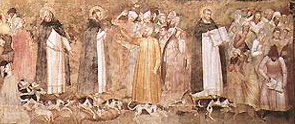
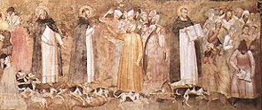

|  |
|---|
Textum Taurini 1954 editum
et automato translatum a Roberto Busa SJ in taenias magneticas
denuo recognovit Enrique Alarcón atque instruxit


|  |
|---|


[70328] Compendium theologiae, lib. 1 cap. 185 Quia vero, sicut in principio dictum est, Christiana fides circa duo praecipue versatur, scilicet circa divinitatem Trinitatis, et circa humanitatem Christi, praemissis his quae ad divinitatem pertinent et effectus eius, considerandum restat de his quae pertinent ad humanitatem Christi. Et quia, ut dicit apostolus, I ad Timoth. I, 15: Christus Iesus venit in hunc mundum peccatores salvos facere, praemittendum videtur quomodo humanum genus in peccatum incidit, ut sic evidentius agnoscatur quomodo per Christi humanitatem homines a peccatis liberantur.
[70330] Compendium theologiae, lib. 1 cap. 186 Sicut supra dictum est, homo in sui conditione taliter institutus fuit a Deo, ut corpus omnino esset animae subiectum: rursumque inter partes animae, inferiores vires rationi absque repugnantia subiicerentur, et ipsa ratio hominis esset Deo subiecta. Ex hoc autem quod corpus erat animae subiectum, contingebat quod nulla passio in corpore posset accidere quae dominio animae super corpus repugnaret, unde nec mors nec infirmitas in homine locum habebat. Ex subiectione vero inferiorum virium ad rationem erat in homine omnimoda mentis tranquillitas, quia ratio humana nullis inordinatis passionibus turbabatur. Ex hoc vero quod voluntas hominis erat Deo subiecta, homo referebat omnia in Deum sicut in ultimum finem, in quo eius iustitia et innocentia consistebat. Horum autem trium ultimum erat causa aliorum. Non enim hoc erat ex natura corporis, si eius componentia considerentur, quod in eo dissolutio sive quaecumque passio vitae repugnans locum non haberet, cum esset ex contrariis elementis compositum. Similiter etiam non erat ex natura animae quod vires etiam sensibiles absque repugnantia rationi subiicerentur, cum vires sensibiles naturaliter moveantur in ea quae sunt delectabilia secundum sensum, quae multoties rectae rationi repugnant. Erat igitur hoc ex virtute superiori, scilicet Dei, qui sicut animam rationabilem corpori coniunxit, omnem proportionem corporis et corporearum virtutum, cuiusmodi sunt vires sensibiles, transcendentem, ita dedit animae rationali virtutem ut supra conditionem corporis ipsum continere posset et vires sensibiles, secundum quod rationali animae competebat. Ut igitur ratio inferiora sub se firmiter contineret, oportebat quod ipsa firmiter sub Deo contineretur, a quo virtutem praedictam habebat supra conditionem naturae. Fuit ergo homo sic institutus ut nisi ratio eius subduceretur a Deo, neque corpus eius subduci poterat a nutu animae, neque vires sensibiles a rectitudine rationis: unde quaedam immortalis vita et impassibilis erat, quia scilicet nec mori nec pati poterat, si non peccaret. Peccare vero poterat voluntate eius nondum confirmata per adeptionem ultimi finis, et sub hoc eventu poterat mori et pati. Et in hoc differt impassibilitas et immortalitas quam primus homo habuit, ab ea quam in resurrectione sancti habebunt, qui nunquam poterunt nec pati nec mori, voluntate eorum omnino confirmata in Deum, sicut supra dictum est. Differebat etiam quoad aliud, quia post resurrectionem homines nec cibis nec venereis utentur, primus autem homo sic conditus fuit ut necesse haberet vitam cibis sustentare, et ei incumberet generationi operam dare, ut genus humanum multiplicaretur ex uno. Unde duo praecepta accepit in sui conditione. Ad primum pertinet quod ei dictum est: de omni ligno quod est in Paradiso comede; ad secundum quod ei dictum est: crescite et multiplicamini, et replete terram.
[70332] Compendium theologiae, lib. 1 cap. 187 Hic autem hominis tam ordinatus status, originalis iustitia nominatur, per quam et ipse suo superiori subditus erat, et ei omnia inferiora subiiciebantur, secundum quod de eo dictum est: et praesit piscibus maris et volatilibus caeli: et inter partes eius etiam inferior absque repugnantia superiori subdebatur. Qui quidem status primo homini fuit concessus non ut cuidam personae singulari, sed ut primo humanae naturae principio, ita quod per ipsum simul cum natura humana traduceretur in posteros. Et quia unicuique debetur locus secundum convenientiam suae conditionis, homo sic ordinate institutus positus est in loco temperatissimo et delicioso, ut non solum interiorum molestiarum, sed etiam aliorum exteriorum omnis ei vexatio tolleretur.
[70334] Compendium theologiae, lib. 1 cap. 188 Quia vero praedictus status hominis ex hoc dependebat quod humana voluntas Deo subiiceretur, ut homo statim a principio assuefieret ad Dei voluntatem sequendam, proposuit Deus homini quaedam praecepta, ut scilicet ex omnibus aliis lignis Paradisi vesceretur, prohibens sub mortis comminatione ne de ligno scientiae boni et mali vesceretur, cuius quidem ligni esus non ideo prohibitus est quia secundum se malus esset, sed ut homo saltem in hoc modico aliquid observaret ea sola ratione quia esset a Deo praeceptum: unde praedicti ligni esus factus est malus, quia prohibitus. Dicebatur autem lignum illud scientiae boni et mali, non quia haberet virtutem scientiae causativam, sed propter eventum sequentem, quia scilicet homo per eius esum experimento didicit quid intersit inter obedientiae bonum et inobedientiae malum.
[70336] Compendium theologiae, lib. 1 cap. 189 Diabolus igitur, qui iam peccaverat, videns hominem taliter institutum ut ad perpetuam felicitatem pervenire posset, a qua ipse deciderat, et nihilominus posset peccare, conatus est a rectitudine iustitiae abducere, aggrediens hominem ex parte debiliori, tentans feminam, in qua minus vigebat sapientiae donum vel lumen: et ut in transgressionem praecepti facilius inclinaret, exclusit mendaciter metum mortis, et ei illa promisit quae homo naturaliter appetit, scilicet vitationem ignorantiae, dicens: aperientur oculi vestri, et excellentiam dignitatis, dicens: scientes bonum et malum. Homo enim ex parte intellectus naturaliter fugit ignorantiam, et scientiam appetit; ex parte vero voluntatis, quae naturaliter libera est, appetit celsitudinem et perfectionem, ut nulli, vel quanto paucioribus potest, subdatur.
[70338] Compendium theologiae, lib. 1 cap. 190 Mulier igitur repromissam celsitudinem simul et perfectionem scientiae concupivit. Accessit etiam ad hoc pulchritudo et suavitas fructus, alliciens ad edendum, et sic metu mortis contempto, praeceptum Dei transgressa est, de vetito ligno edendo, et sic eius peccatum multiplex invenitur. Primo quidem superbiae, qua inordinate excellentiam appetiit. Secundo curiositatis, qua scientiam ultra terminos sibi praefixos concupivit. Tertio gulae, qua suavitate cibi permota est ad edendum. Quarto infidelitatis, per falsam aestimationem de Deo, dum credidit verbis Diaboli contra Deum loquentis. Quinto inobedientiae, praeceptum Dei transgrediendo.
[70340] Compendium theologiae, lib. 1 cap. 191 Ex persuasione autem mulieris peccatum usque ad virum pervenit, qui tamen, ut apostolus dicit, non est seductus ut mulier, in hoc scilicet quod crederet verbis Diaboli contra Deum loquentis. Non enim in eius mente cadere poterat, Deum mendaciter aliquid comminatum esse, neque inutiliter a re utili prohibuisse. Allectus tamen fuit promissione Diaboli, excellentiam et scientiam indebite appetendo. Ex quibus cum voluntas eius a rectitudine iustitiae discessisset, uxori suae morem gerere volens, in transgressione divini praecepti eam secutus est, edendo de fructu ligni vetiti.
[70342] Compendium theologiae, lib. 1 cap. 192 Quia igitur dicti status tam ordinata integritas tota causabatur ex subiectione humanae voluntatis ad Deum, consequens fuit ut subducta humana voluntate a subiectione divina, deperiret illa perfecta subiectio inferiorum virium ad rationem et corporis ad animam: unde consecutum est ut homo sentiret in inferiori appetitu sensibili, concupiscentiae et irae et ceterarum passionum inordinatos motus non secundum ordinem rationis, sed magis ei repugnantes, et eam plerumque obnubilantes, et quasi perturbantes: et haec est repugnantia carnis ad spiritum, de qua Scriptura loquitur. Nam quia appetitus sensitivus, sicut et ceterae sensitivae vires, per instrumentum corporeum operatur, ratio autem absque aliquo organo corporali, convenienter quod ad appetitum sensitivum pertinet, carni imputatur; quod vero ad rationem, spiritui, secundum quod spirituales substantiae dici solent quae sunt a corporibus separatae.
[70344] Compendium theologiae, lib. 1 cap. 193 Consecutum est etiam, ut in corpore sentiretur corruptionis defectus, ac per hoc homo incurreret necessitatem moriendi, quasi animatum non valens corpus in perpetuum continere, vitam ei praebendo: unde homo factus est passibilis et mortalis, non solum quasi potens pati et mori ut antea, sed quasi necessitatem habens ad patiendum et moriendum.
[70346] Compendium theologiae, lib. 1 cap. 194 Consecuti sunt in homine per consequens multi alii defectus. Abundantibus enim in appetitu inferiori inordinatis motibus passionum, simul etiam et in ratione deficiente lumine sapientiae, quo divinitus illustrabatur voluntas dum erat Deo subiecta, per consequens affectum suum rebus sensibilibus subdidit, in quibus oberrans a Deo multipliciter peccavit, et ulterius immundis spiritibus se subdidit per quos credidit in huiusmodi rebus agendis acquirendis sibi auxilium praestari, et sic in humano genere idolatria et diversa peccatorum genera processerunt: et quo magis in his homo corruptus fuit, eo amplius a cognitione et desiderio bonorum spiritualium et divinorum recessit.
[70348] Compendium theologiae, lib. 1 cap. 195 Et quia praedictum originalis iustitiae bonum sic humano generi in primo parente divinitus attributum fuit, ut tamen per ipsum derivaretur in posteros, remota autem causa removetur effectus, consequens fuit ut primo homine praedicto bono per proprium peccatum privato, omnes posteri privarentur, et sic de cetero, scilicet post peccatum primi parentis, omnes absque originali iustitia et cum defectibus consequentibus sunt exorti. Nec hoc est contra ordinem iustitiae, quasi Deo puniente in filiis quod primus parens deliquit, quia ista poena non est nisi subtractio eorum quae supernaturaliter primo homini divinitus sunt concessa, per ipsum in alios derivanda: unde aliis non debebantur, nisi quatenus per primum parentem in eos erant transitura. Sicut si rex det feudum militi, transiturum per ipsum ad heredes, si miles contra regem peccat, ut feudum mereatur amittere, non potest postmodum ad eius heredes devenire: unde iuste privantur posteri per culpam parentis.
[70350] Compendium theologiae, lib. 1 cap. 196 Sed remanet quaestio magis urgens: utrum defectus originalis iustitiae in his qui ex primo parente prodierunt, rationem culpae possit habere. Hoc enim ad rationem culpae pertinere videtur, sicut supra dictum est, ut malum quod culpabile dicitur, sit in potestate eius cui imputatur in culpam. Nullus enim culpatur de eo quod non est in eo facere vel non facere. Non est autem in potestate eius qui nascitur, ut cum originali iustitia nascatur, vel sine ea: unde videtur quod talis defectus rationem culpae habere non possit. Sed haec quaestio de facili solvitur, si distinguatur inter personam et naturam. Sicut enim in una persona multa sunt membra, ita in una humana natura multae sunt personae, ut participatione speciei multi homines intelligantur quasi unus homo, ut Porphyrius dicit. Est autem hoc advertendum in peccato unius hominis, quod diversis membris diversa peccata exercentur, nec requiritur ad rationem culpae quod singula peccata sint voluntaria voluntate membrorum quibus exercentur, sed voluntate eius quod est in homine principale, scilicet intellectivae partis. Non enim potest manus non percutere aut pes non ambulare voluntate iubente. Per hunc igitur modum defectus originalis iustitiae est peccatum naturae, inquantum derivatur ex inordinata voluntate primi principii in natura humana, scilicet primi parentis, et sic est voluntarium habito respectu ad naturam, voluntate scilicet primi principii naturae, et sic transit in omnes qui ab ipso naturam humanam accipiunt, quasi in quaedam membra ipsius, et propter hoc dicitur originale peccatum, quia per originem a primo parente in posteros derivatur: unde cum alia peccata, scilicet actualia, immediate respiciant personam peccantem, hoc peccatum directe respicit naturam. Nam primus parens suo peccato infecit naturam, et natura infecta inficit personam filiorum, qui ipsam a primo parente suscipiunt.
[70352] Compendium theologiae, lib. 1 cap. 197 Nec tamen oportet quod omnia peccata alia vel primi parentis, vel etiam ceterorum, traducantur in posteros, quia primum peccatum primi parentis sustulit donum totum quod supernaturaliter erat collatum in humana natura personae primi parentis, et sic dicitur corrupisse vel infecisse naturam: unde peccata consequentia non inveniunt aliquid huiusmodi quod possint subtrahere a tota natura humana, sed auferunt ab homine aut diminuunt aliquod bonum particulare, scilicet personale, nec corrumpunt naturam, nisi inquantum pertinet ad hanc vel illam personam. Homo autem non generat sibi similem in persona, sed in natura: et ideo non traducitur a parente in posteros peccatum quod vitiat personam, sed primum peccatum quod vitiavit naturam.
[70354] Compendium theologiae, lib. 1 cap. 198 Quamvis autem peccatum primi parentis totam humanam naturam infecerit, non tamen potuit per eius poenitentiam vel quodcumque eius meritum tota natura reparari. Manifestum est enim quod poenitentia Adae, vel quodcumque aliud eius meritum, fuit actus singularis personae, actus autem alicuius individui non potest in totam naturam speciei. Causae enim quae possunt in totam speciem, sunt causae aequivocae, et non univocae. Sol enim est causa generationis in tota specie humana, sed homo est causa generationis huius hominis. Singulare ergo meritum Adae, vel cuiuscumque puri hominis, sufficiens esse non poterat ad totam naturam reintegrandam. Quod autem per actum singularem primi hominis tota natura est vitiata, per accidens est consecutum, inquantum eo privato innocentiae statu, per ipsum in alios derivari non potuit. Et quamvis per poenitentiam redierit ad gratiam, non tamen redire potuit ad pristinam innocentiam, cui divinitus praedictum originalis iustitiae donum concessum erat. Similiter etiam manifestum est quod praedictus originalis iustitiae status fuit quoddam speciale donum gratiae, gratia autem meritis non acquiritur, sed gratis a Deo datur. Sicut igitur primus homo a principio originalem iustitiam non ex merito habuit, sed ex divino dono, ita etiam, et multo minus, post peccatum eam mereri potuit poenitendo, vel quodcumque aliud opus agendo.
[70356] Compendium theologiae, lib. 1 cap. 199 Oportebat autem quod humana natura praedicto modo infecta, ex divina providentia repararetur. Non enim poterat ad perfectam beatitudinem pervenire, nisi tali infectione remota: quia beatitudo cum sit perfectum bonum, nullum defectum patitur, et maxime defectum peccati, quod aliquo modo virtuti opponitur, quae est via in ipsam, ut dictum est. Et sic cum homo propter beatitudinem factus sit, quia ipsa est ultimus eius finis, sequeretur quod opus Dei in tam nobili creatura frustraretur, quod reputat inconveniens Psalmista, cum dicit, Psal. LXXXVIII, v. 48: nunquid enim vane constituisti omnes filios hominum? Sic igitur oportebat humanam naturam reparari. Praeterea. Bonitas divina excedit potentiam creaturae ad bonum. Patet autem ex supra dictis quod talis est hominis conditio quandiu in hac mortali vita vivit, quod sicut nec confirmatur in bono immobiliter, ita nec immobiliter obstinatur in malo. Pertinet igitur hoc ad conditionem humanae naturae ut ab infectione peccati possit purgari. Non fuit igitur conveniens quod divina bonitas hanc potentiam totaliter dimitteret vacuam, quod fuisset, si ei reparationis remedium non procurasset.
[70358] Compendium theologiae, lib. 1 cap. 200 Ostensum est autem quod neque per Adam neque per aliquem alium hominem purum poterat reparari: tum quia nullus singularis homo praeeminebat toti naturae, tum quia nullus purus homo potest esse gratiae causa. Eadem ergo ratione nec per Angelum potuit reparari, quia nec Angelus potest esse gratiae causa, nec etiam praemium hominis quantum ad ultimam beatitudinem perfectam, ad quam oportebat hominem revocari, quia in ea sunt pares. Relinquitur igitur quod per solum Deum talis reparatio fieri poterat. Sed si Deus hominem sola sua voluntate et virtute reparasset, non servaretur divinae iustitiae ordo, secundum quam exigitur satisfactio pro peccato. In Deo autem satisfactio non cadit, sicut nec meritum, hoc enim est sub alio existentis. Sic igitur neque Deo competebat satisfacere pro peccato totius naturae humanae, nec purus homo poterat, ut ostensum est. Conveniens igitur fuit Deum hominem fieri, ut sic unus et idem esset qui et reparare et satisfacere posset. Et hanc causam divinae incarnationis assignat apostolus, I Tim. I, 15: Christus Iesus venit in hunc mundum peccatores salvos facere.
[70360] Compendium theologiae, lib. 1 cap. 201 Sunt tamen et aliae rationes incarnationis divinae. Quia enim homo a spiritualibus recesserat, et totum se rebus corporalibus dederat, ex quibus in Deum per se ipsum redire non poterat, divina sapientia, quae hominem fecerat, per naturam corpoream assumptam hominem in corporalibus iacentem visitavit, ut per sui corporis mysteria eum ad spiritualia revocaret. Fuit etiam necessarium humano generi ut Deus homo fieret, ad demonstrandum naturae humanae dignitatem, ut sic homo neque Daemonibus subderetur, neque corporalibus rebus. Simul etiam per hoc quod Deus homo fieri voluit, manifeste ostendit immensitatem sui amoris, ut ex hoc iam homines Deo subderentur non propter metum mortis, quam primus homo contempsit, sed per caritatis affectum. Datur etiam per hoc homini quoddam exemplum illius beatae unionis qua intellectus creatus increato spiritui intelligendo unietur. Non enim restat incredibile quin intellectus creaturae Deo uniri possit, eius essentiam videndo, ex quo Deus homini unitus est, naturam eius assumendo. Perficitur etiam per hoc quodammodo totius operis divini universitas, dum homo, qui est ultimo creatus, circulo quodam in suum redit principium, ipsi rerum principio per opus incarnationis unitus.
[70362] Compendium theologiae, lib. 1 cap. 202 Hoc autem divinae incarnationis mysterium Photinus, quantum in se est, evacuavit. Nam Ebionem et Cerinthum et Paulum Samosatenum sequens, dominum Iesum Christum fuisse purum hominem asseruit, nec ante Mariam virginem extitisse, sed quod per beatae vitae meritum, et patientiam mortis, gloriam divinitatis promeruit, ut sic Deus diceretur non per naturam, sed per adoptionis gratiam. Sic igitur non esset facta unio Dei et hominis, sed homo esset per gratiam deificatus, quod non singulare est Christo, sed commune omnibus sanctis, quamvis in hac gratia aliqui excellentiores aliis habeantur. Hic autem error auctoritatibus divinae Scripturae contradicit. Dicitur enim Ioan. I, 1: in principio erat verbum; et postea subdit: verbum caro factum est. Verbum ergo quod erat in principio apud Deum, carnem assumpsit, non autem homo, qui ante fuerat, per gratiam adoptionis deificatus. Item dominus dicit Ioan. VI, 38: descendi de caelo non ut faciam voluntatem meam, sed voluntatem eius qui misit me. Secundum autem Photini errorem non conveniret Christo descendisse, sed solum ascendisse, cum tamen apostolus dicat, Ephes. IV, 9: quod autem ascendit, quid est nisi quia et descendit primum in inferiores partes terrae? Ex quo manifeste datur intelligi, quod in Christo non haberet locum ascensio, nisi descensio praecessisset.
[70364] Compendium theologiae, lib. 1 cap. 203 Hoc igitur volens declinare Nestorius, partim quidem a Photini errore discessit, quia posuit Christum filium Dei non solum per adoptionis gratiam, sed per naturam divinam, in qua patri extitit coaeternus; partim vero cum Photino concordat, dicens, filium Dei non sic esse unitum homini ut una persona fieret Dei et hominis, sed per solam inhabitationem in ipso, et sic homo ille, sicut secundum Photinum per solam gratiam Deus dicitur, sic et secundum Nestorium Dei filius dicitur, non quia ipse vere sit Deus, sed propter filii Dei inhabitationem in ipso, quae est per gratiam. Hic autem error auctoritati sacrae Scripturae repugnat. Hanc enim unionem Dei et hominis apostolus exinanitionem nominat, dicens, Philip. II, 6, de filio Dei: qui cum in forma Dei esset, non rapinam arbitratus est esse se aequalem Deo, sed semetipsum exinanivit, formam servi accipiens. Non est autem exinanitio Dei quod creaturam rationalem inhabitet per gratiam, alioquin et pater et spiritus sanctus exinanirentur, quia et ipsi creaturam rationalem per gratiam inhabitant, dicente domino de se et de patre, Ioan. XIV, 23: ad eum veniemus, et mansionem apud eum faciemus, et apostolo de spiritu sancto, I Cor. III, 16: spiritus Dei habitat in vobis. Item non conveniret homini illi voces divinitatis emittere, si personaliter Deus non esset. Praesumtuosissime ergo dixisset: ego et pater unum sumus: et: antequam Abraham fieret, ego sum. Ego enim personam loquentis demonstrat: homo autem erat qui loquebatur. Est igitur persona eadem Dei et hominis. Ad hos ergo errores excludendos, in symbolo tam apostolorum quam patrum, facta mentione de persona filii, subditur: qui conceptus est de spiritu sancto, natus, passus, mortuus et resurrexit. Non enim ea quae sunt hominis, de filio Dei praedicarentur, nisi eadem esset persona filii Dei et hominis, quia quae uni personae conveniunt, non ex hoc ipso de altera praedicantur: sicut quae conveniunt Paulo, non ex hoc ipso praedicantur de Petro.
[70366] Compendium theologiae, lib. 1 cap. 204 Ut ergo unitatem Dei et hominis confiterentur quidam haeretici in partem contrariam diverterunt, dicentes, Dei et hominis esse unam non solum personam, sed etiam naturam. Cuius quidem erroris principium fuit ab Ario, qui ut ea quae in Scripturis dicuntur de Christo, quibus ostenditur minor patre, non nisi ad ipsum Dei filium possent referri secundum assumentem naturam, posuit in Christo non aliam animam esse quam Dei verbum, quod dixit corpori Christi fuisse pro anima: ut sic cum dicit: pater maior me est, vel cum orasse legitur, aut tristatus, ad ipsam naturam filii Dei sit referendum. Hoc autem posito, sequitur quod unio filii Dei ad hominem facta sit non solum in persona, sed etiam in natura. Manifestum est enim quod ex anima et corpore constituitur unitas humanae naturae. Et huius quidem positionis falsitas quantum ad id quod filium minorem patre asserit, supra est declarata, cum ostendimus filium patri aequalem. Quantum vero ad id quod dicit, verbum Dei in Christo fuisse pro anima, huius erroris ex praemissis falsitas ostendi potest. Ostensum est enim supra, animam corpori uniri ut formam, Deum autem impossibile est formam corporis esse, sicut supra ostensum est. Et ne forte Arius hoc diceret de summo Deo patre intelligendum, idem et de Angelis ostendi potest, quod secundum naturam corpori non possunt uniri per modum formae, cum sint secundum naturam suam a corporibus separati. Multo igitur minus filius Dei, per quem facti sunt Angeli, ut etiam Arius confitetur, corporis forma esse potest. Praeterea. Filius Dei etiam si sit creatura, ut Arius mentitur, tamen secundum ipsum in beatitudine praecedit omnes spiritus creatos. Est autem tanta Angelorum beatitudo, quod tristitiam habere non possunt. Non enim esset vera et plena felicitas, si aliquid eorum votis deficeret: est enim de ratione beatitudinis ut sit finale et perfectum bonum totaliter appetitum quietans. Multo igitur minus Dei filius tristari potest aut timere secundum suam naturam. Legitur autem tristatus, cum dicitur: coepit Iesus pavere et taedere, et moestus esse; et ipse etiam suam tristitiam profitetur, dicens: tristis est anima mea usque ad mortem. Manifestum est autem tristitiam non esse corporis, sed alicuius apprehensivae substantiae. Oportet igitur praeter verbum et corpus in Christo aliam fuisse substantiam quae tristitiam pati posset, et hanc dicimus animam. Rursus. Si Christus propterea assumpsit quae nostra sunt, ut nos a peccatis mundaret, magis autem necessarium erat nobis mundari secundum animam, a qua origo peccati processerat, et quae est subiectum peccati: non igitur corpus assumpsit sine anima, sed quia principalius animam, et corpus cum anima.
[70368] Compendium theologiae, lib. 1 cap. 205 Ex quo etiam excluditur error Apollinaris, qui primo quidem Arium secutus, in Christo non aliam animam esse posuit quam Dei verbum. Sed quia non sequebatur Arium in hoc quod filium Dei diceret creaturam, multa autem dicuntur de Christo quae nec corpori attribui possunt, nec creatori convenire, ut tristitia, timor et huiusmodi, coactus tandem fuit ponere quidem aliquam animam in Christo, quae corpus sensificaret, et quae harum passionum posset esse subiectum, quae tamen ratione et intellectu carebat, ipsum autem verbum homini Christo pro intellectu et ratione fuisse. Hoc autem multipliciter falsum esse ostenditur. Primo quidem, quia hoc est contra naturae rationem ut anima non rationalis sit forma hominis, cum tamen formam corporis habeat. Nihil autem monstruosum et innaturale in Christi incarnatione fuisse putandum est. Secundo, quia fuisset contra incarnationis finem, qui est reparatio humanae naturae, quae quidem principalius indiget reparari quantum ad intellectivam partem, quae particeps peccati esse potest. Unde praecipue conveniens fuit ut intellectivam hominis partem assumeret. Dicitur etiam Christus admiratus fuisse, admirari autem non est nisi animae rationalis, Deo vero omnino convenire non potest. Sicut igitur tristitia cogit in Christo ponere animam sensitivam, sic admiratio cogit ponere in Christo partem animae intellectivam.
[70370] Compendium theologiae, lib. 1 cap. 206 Hos autem quantum ad aliquid Eutyches secutus est. Posuit enim unam naturam fuisse Dei et hominis post incarnationem, non tamen posuit quod Christo deesset vel anima vel intellectus, vel aliquid eorum quae ad integritatem spectant naturae. Sed et huius opinionis falsitas manifeste apparet. Divina enim natura in se perfecta et incommutabilis est. Natura enim quae in se perfecta est, cum altera non potest in unam naturam convenire, nisi vel ipsa convertatur in alteram, sicut cibus in cibatum, vel alterum convertatur in ipsum, sicut in ignem ligna; vel utrumque transmutetur in tertium, sicut elementa in corpus mixtum. Haec autem omnia removet divina immutabilitas. Non enim immutabile est neque quod in alterum convertitur, neque in quod alterum converti potest. Cum ergo natura divina in se sit perfecta, nullo modo potest esse quod simul cum aliqua natura in unam naturam conveniat. Rursum. Si quis rerum ordinem consideret, additio maioris perfectionis variat naturae speciem: alterius enim speciei est quod est et vivit tantum, ut planta, quam quod est tantum. Quod autem est et vivit et sentit, ut animal, est alterius speciei quam quod est et vivit tantum, ut planta. Item quod est, vivit, sentit et intelligit, ut homo, est alterius speciei quam quod est, vivit et sentit tantum, ut animal brutum. Si igitur illa una natura quae ponitur esse Christi, supra haec omnia habuit quod divinum est, consequens est quod illa natura alterius fuerit speciei a natura humana, sicut natura humana a natura bruti animalis. Neque Christus igitur fuit homo eiusdem speciei: quod falsum esse ostenditur ex hoc quod ab hominibus secundum carnem progenitus fuit, sicut Matthaeus ostendit in principio Evangelii sui dicens: liber generationis Iesu Christi, filii David, filii Abraham.
[70372] Compendium theologiae, lib. 1 cap. 207 Sicut autem Photinus evacuavit incarnationis mysterium, divinam naturam a Christo auferendo, sic Manichaeus auferendo humanam. Quia enim ponebat totam creaturam corpoream a Diabolo fuisse creatam, nec erat conveniens ut boni Dei filius assumeret Diaboli creaturam, ideo posuit Christum non habuisse veram carnem, sed phantasticam tantum, et omnia quae in Evangelio de Christo narrantur ad humanam naturam pertinentia, in phantasia, et non in veritate facta fuisse asserebat. Haec autem positio manifeste sacrae Scripturae contradicit, quae Christum asserit de virgine natum, circumcisum, esuriisse, comedisse et alia pertulisse quae pertinent ad humanae carnis naturam. Falsa igitur esset Evangeliorum Scriptura, haec narrans de Christo. Rursus. Ipse Christus de se dicit Ioan. XVIII, 37: in hoc natus sum, et ad hoc veni in mundum, ut testimonium perhibeam veritati. Non fuisset autem veritatis testis, sed magis falsitatis, si in se demonstrasset quod non erat: praesertim cum praedixerit se passurum quae sine vera carne pati non potuisset, scilicet quod traderetur in manus hominum, quod conspueretur, flagellaretur, crucifigeretur. Dicere ergo Christum veram carnem non habuisse, nec huiusmodi in veritate, sed solum in phantasia eum fuisse perpessum, est Christo imponere falsitatem. Adhuc. Veram opinionem a cordibus hominum removere, est hominis fallacis. Christus autem hanc opinionem a cordibus discipulorum removit. Cum enim post resurrectionem discipulis apparuit qui eum spiritum vel phantasma esse existimabant, ad huiusmodi suspicionem de cordibus eorum tollendam, dixit: palpate, et videte, quia spiritus carnem et ossa non habet, sicut me videtis habere; et in alio loco, cum supra mare ambularet, existimantibus eum discipulis esse phantasma, et ob hoc eis in timore constitutis, dominus dixit: ego sum, nolite timere. Si igitur haec opinio vera est, necesse est dicere Christum fuisse fallacem. Christus autem veritas est, ut ipse de se dicit. Haec opinio igitur est falsa.
[70374] Compendium theologiae, lib. 1 cap. 208 Valentinus autem etsi verum corpus Christum habuisse confiteretur, dicebat tamen eum carnem non assumpsisse de virgine, sed attulisse corpus de caelo formatum, quod transivit per virginem, nihil ex ea accipiens, sicut aqua transit per canalem. Hoc etiam veritati Scripturae contradicit. Dicit enim apostolus, Rom. I, 3: qui factus est ei ex semine David secundum carnem, et ad Gal. IV, 4, dicit: misit Deus filium suum unigenitum factum ex muliere. Matthaeus autem I, 16, dicit: et Iacob genuit Ioseph virum Mariae, de qua natus est Iesus, qui vocatur Christus, et postmodum eam eius matrem nominat subdens: cum esset desponsata mater eius Maria Ioseph. Haec autem vera non essent, si Christus de virgine carnem non assumpsisset. Falsum est igitur quod corpus caeleste attulerit. Sed quod apostolus I ad Corinth. XV, 47, dicit: secundus homo de caelo caelestis, intelligendum est quod de caelo descendit secundum divinitatem, non autem secundum substantiam corporis. Adhuc. Nulla ratio esset quare corpus de caelo afferens Dei filius, uterum virginis introisset, si ex ea nil assumeret, sed magis videretur esse fictio quaedam, dum ex utero matris egrediens demonstraret se ab ea accepisse carnem quam non acceperat. Cum igitur omnis falsitas a Christo sit aliena, simpliciter confitendum est, quod Christus sic processit ex utero virginis quod ex ea carnem accepit.
[70376] Compendium theologiae, lib. 1 cap. 209 Ex praemissis igitur colligere possumus, quod in Christo secundum veritatem Catholicae fidei fuit verum corpus nostrae naturae, vera anima rationalis, et simul cum hoc perfecta deitas. Hae autem tres substantiae in unam personam conveniunt, non autem in unam naturam. Ad cuius etiam veritatis expositionem aliqui per quasdam vias erroneas processerunt. Considerantes enim quidam, quod omne quod advenit alicui post esse completum, accidentaliter ei adiungitur, ut homini vestis, posuerunt quod humanitas accidentali unione fuerit in persona filii divinitati coniuncta, ita scilicet quod natura assumpta se haberet ad personam filii Dei sicut vestis ad hominem. Ad cuius confirmationem inducebant quod apostolus dicit ad Philip. de Christo, quod habitu inventus est ut homo. Rursus considerabant quod ex unione animae et corporis efficitur individuum quoddam rationalis naturae, quod nominatur persona. Si igitur anima in Christo fuisset corpori unita, videre non poterant quin sequeretur quod ex tali unione constitueretur persona. Sequeretur ergo in Christo duas esse personas, scilicet personam assumentem, et personam assumptam: in homine enim induto non sunt duae personae, quia indumentum rationem personae non habet. Si autem vestis esset persona, sequeretur in homine vestito duas esse personas. Ad hoc igitur excludendum, posuerunt quidam animam Christi unitam nunquam fuisse corpori, sed quod persona filii Dei animam et corpus separatim assumpsit. Sed haec opinio dum unum inconveniens vitare nititur, incidit in maius. Sequitur enim ex necessitate, quod Christus non fuerit verus homo. Veritas enim humanae naturae requirit animae et corporis unionem, nam homo est qui ex utroque componitur. Sequeretur etiam quod Christi non fuerit vera caro, nec aliquod membrum eius habuit veritatem. Remota enim anima non est oculus, aut manus, aut caro et os, nisi aequivoce, sicut pictus aut lapideus. Sequeretur etiam quod Christus vere mortuus non fuerit. Mors enim est privatio vitae. Manifestum est enim quod divinitatis vita per mortem privari non potuit, corpus autem vivum esse non potuit, si ei anima coniuncta non fuit. Sequeretur etiam ulterius quod Christi corpus sentire non potuit, non enim sentit corpus nisi per animam sibi coniunctam. Adhuc autem haec opinio in errorem Nestorii relabitur, quem tamen declinare intendit. In hoc enim erravit Nestorius, quod posuit verbum Dei homini Christo fuisse unitum secundum inhabitationem gratiae, ita quod verbum Dei fuerit in illo homine sicut in templo suo. Nihil autem refert dicere, quantum ad propositum pertinet, quod verbum est in homine sicut in templo, et quod natura humana verbo adveniat ut vestimentum vestito: nisi quod in tantum haec opinio est deterior, quia Christum verum hominem confiteri non potest. Est igitur haec opinio non immerito condemnata. Adhuc autem homo vestitus non potest esse persona vestis aut indumenti, nec aliquo modo dici potest quod sit in specie indumenti. Si igitur filius Dei humanam naturam ut vestimentum assumpsit, nullo modo dici poterit persona humanae naturae, nec etiam dici poterit quod filius Dei sit eiusdem speciei cum aliis hominibus, de quo tamen apostolus dicit quod est in similitudinem hominum factus. Unde patet hanc opinionem esse totaliter evitandam.
[70378] Compendium theologiae, lib. 1 cap. 210 Alii vero praedicta inconvenientia vitare volentes, posuerunt quidem in Christo animam corpori fuisse unitam, et ex tali unione quendam hominem constitutum fuisse, quem dicunt a filio Dei in unitatem personae assumptum, ratione cuius assumptionis illum hominem dicunt esse filium Dei, et filium Dei dicunt esse illum hominem. Et quia assumptionem praedictam ad unitatem personae dicunt esse terminatam, confitentur quidem in Christo unam personam Dei et hominis, sed quia hic homo, quem ex anima et corpore constitutum dicunt, est quoddam suppositum vel hypostasis humanae naturae, ponunt in Christo duo supposita et duas hypostases: unum naturae humanae, creatum et temporale; aliud divinae naturae, increatum et aeternum. Haec autem positio licet ab errore Nestorii verbotenus recedere videatur, tamen si quis eam interius perscrutetur, in idem cum Nestorio labitur. Manifestum est enim quod persona nihil aliud est quam substantia individua rationalis naturae, humana autem natura rationalis est: unde et ex hoc ipso quod ponitur in Christo aliqua hypostasis vel suppositum naturae humanae, temporale et creatum, ponitur etiam aliqua persona in Christo, temporalis creata: hoc enim est quod nomine suppositi vel hypostasis significatur, scilicet individua substantia. Ponentes ergo in Christo duo supposita vel duas hypostases, si quod dicunt intelligunt, necesse habent ponere duas personas. Item. Quaecumque supposito differunt, ita se habent, quod ea quae sunt propria unius, alteri convenire non possunt. Si ergo non est idem suppositum filius Dei et filius hominis, sequitur quod ea quae sunt filii hominis, non possunt attribui filio Dei, nec e converso. Non ergo poterit dici Deus crucifixus, aut natus ex virgine: quod est Nestorianae impietatis. Si quis autem ad haec dicere velit, quod ea quae sunt hominis illius, filio Dei attribuuntur, et e converso propter unitatem personae, quamvis sint diversa supposita, hoc omnino stare non potest. Manifestum est enim quod suppositum aeternum filii Dei non est aliud quam ipsa eius persona. Quaecumque igitur dicuntur de filio Dei ratione suae personae, dicerentur de ipso ratione sui suppositi. Sed ea quae sunt hominis, non dicuntur de eo ratione suppositi, quia ponitur filius Dei a filio hominis supposito differre. Neque igitur ratione personae de filio Dei dici poterunt quae sunt propria filii hominis, ut nasci de virgine, mori, et similia. Adhuc. Si de supposito aliquo temporali Dei nomen praedicetur, hoc erit recens et novum. Sed omne quod recenter et de novo dicitur Deus, non est Deus, nisi quia factum est Deus. Quod autem est factum Deus, non est naturaliter Deus, sed per adoptionem solum. Sequitur ergo quod ille homo non fuerit vere et naturaliter Deus, sed solum per adoptionem: quod etiam ad errorem Nestorii pertinet.
[70380] Compendium theologiae, lib. 1 cap. 211 Sic igitur oportet dicere, quod in Christo non solum sit una persona Dei et hominis, sed etiam unum suppositum et una hypostasis: natura autem non una, sed duae. Ad cuius evidentiam considerare oportet, quod haec nomina persona, hypostasis et suppositum, integrum quoddam designant. Non enim potest dici quod manus aut caro aut quaecumque aliarum partium sit persona vel hypostasis aut suppositum, sed hoc totum, quod est hic homo. Ea vero nomina quae sunt communia individuis substantiarum et accidentium, ut individuum et singulare, possunt et toti et partibus aptari. Nam partes cum accidentibus aliquid habent commune: scilicet quod non per se existunt, sed aliis insunt, licet secundum modum diversum. Potest igitur dici quod manus Socratis et Platonis est quoddam individuum, vel singulare quoddam, licet non sit hypostasis vel suppositum vel persona. Est etiam considerandum ulterius, quod aliquorum coniunctio per se considerata, quandoque quidem facit aliquod integrum, quae in alio propter additionem alterius non constituit aliquod integrum, sicut in lapide commixtio quatuor elementorum facit aliquod integrum: unde illud quod est ex elementis constitutum, in lapide potest dici suppositum vel hypostasis, quod est hic lapis, non autem persona, quia non est hypostasis naturae rationalis. Compositio autem elementorum in animali non constituit aliquod integrum, sed constituit partem, scilicet corpus: quia necesse est aliquid aliud advenire ad completionem animalis, scilicet animam; unde compositio elementorum in animali non constituit suppositum vel hypostasim, sed hoc animal totum est hypostasis vel suppositum. Nec tamen propter hoc minus est efficax in animali elementorum compositio quam in lapide, sed multo amplius, quia est ordinata ad rem nobiliorem. Sic igitur in aliis hominibus unio animae et corporis constituit hypostasim et suppositum, quia nihil aliud est praeter haec duo. In domino autem Iesu Christo praeter animam et corpus advenit tertia substantia, scilicet divinitas. Non ergo est seorsum suppositum vel hypostasis, sicut nec persona, id quod est ex corpore et anima constitutum, sed suppositum, hypostasis vel persona est id quod constat ex tribus substantiis, corpore scilicet et anima et divinitate, et sic in Christo sicut est una tantum persona, ita unum suppositum et una hypostasis. Alia autem ratione advenit anima corpori, et divinitas utrique. Nam anima advenit corpori ut forma eius existens, unde his duobus constituitur una natura, quae dicitur humana natura. Divinitas autem non advenit animae et corpori per modum formae, neque per modum partis: hoc enim est contra rationem divinae perfectionis. Unde ex divinitate et anima et corpore non constituitur una natura, sed ipsa natura divina in seipsa integra et pura existens sibi quodam modo incomprehensibili et ineffabili humanam naturam ex anima et corpore constitutam assumpsit, quod ex infinita virtute eius processit. Videmus enim quod quanto aliquod agens est maioris virtutis, tanto magis sibi applicat aliquod instrumentum ad aliquod opus perficiendum. Sicut igitur virtus divina propter sui infinitatem est infinita et incomprehensibilis, ita modus quo sibi univit humanam naturam Christus, quasi organum quoddam ad humanae salutis effectum, est nobis ineffabilis, et excedens omnem aliam unionem Dei ad creaturam. Et quia, sicut iam diximus, persona, hypostasis et suppositum designant aliquid integrum, si divina natura in Christo est ut pars, et non ut aliquid integrum, sicut anima in compositione hominis, una persona Christi non se teneret tantum ex parte naturae divinae, sed esset quoddam constitutum ex tribus, sicut et in homine persona, hypostasis et suppositum est quod ex anima et corpore constituitur. Sed quia divina natura est aliquid integrum, quod sibi assumpsit per quandam ineffabilem unionem humanam naturam, persona se tenet ex parte divinae naturae, et similiter hypostasis et suppositum; anima vero et corpus trahuntur ad personalitatem personae divinae, ut sit persona filii Dei, sicut etiam persona filii hominis et hypostasis et suppositum. Potest autem huiusmodi exemplum aliquale in creaturis inveniri. Subiectum enim et accidens non sic uniuntur ut ex eis aliquod tertium constituatur, unde subiectum in tali unione non se habet ut pars, sed est integrum quoddam, quod est persona, hypostasis et suppositum. Accidens autem trahitur ad personalitatem subiecti, ut sit persona eadem hominis et albi, et similiter eadem hypostasis et idem suppositum. Sic igitur secundum similitudinem quandam persona, hypostasis et suppositum filii Dei est persona, hypostasis et suppositum humanae naturae in Christo. Unde quidam propter huiusmodi similitudinem dicere praesumpserunt, quod humana natura in Christo degenerat in accidens, et quod accidentaliter Dei filio uniretur, veritatem a similitudine non discernentes. Patet igitur ex praemissis quod in Christo non est alia persona nisi aeterna, quae est persona filii Dei, nec alia hypostasis aut suppositum; unde cum dicitur hic homo, demonstrato Christo, importatur suppositum aeternum. Nec tamen propter hoc aequivoce dicitur hoc nomen homo de Christo et de aliis hominibus. Aequivocatio enim non attenditur secundum diversitatem suppositionis, sed secundum diversitatem significationis. Nomen autem hominis attributum Petro et Christo idem significat, scilicet naturam humanam, sed non idem supponit: quia hic supponit suppositum aeternum filii Dei, ibi autem suppositum creatum. Quia vero de unoquoque supposito alicuius naturae possunt dici ea quae competunt illi naturae cuius est suppositum, idem autem est suppositum in Christo humanae et divinae naturae, manifestum est quod de hoc supposito utriusque naturae, sive supponatur per nomen significans divinam naturam aut personam, sive humanam, possunt dici indifferenter et quae sunt divinae, et quae sunt humanae naturae, utputa, si dicamus, quod filius Dei est aeternus, et quod filius Dei est natus de virgine, et similiter dicere possumus, quod hic homo est Deus, et creavit stellas, et est natus, mortuus et sepultus. Quod autem praedicatur de aliquo supposito, praedicatur de eo secundum aliquam formam vel materiam, sicut Socrates est albus secundum albedinem, et est rationalis secundum animam. Dictum est autem supra quod in Christo sunt duae naturae et unum suppositum. Si ergo referatur ad suppositum, indifferenter sunt praedicanda de Christo humana et divina. Est tamen discernendum secundum quid utrumque dicatur, quia divina dicuntur de Christo secundum divinam naturam, humana vero secundum humanam.
[70382] Compendium theologiae, lib. 1 cap. 212 Quia igitur in Christo est una persona et duae naturae, ex horum convenientia considerandum est, quid in Christo unum dici debeat, et quid multa. Quaecumque enim secundum naturae diversitatem multiplicantur, necesse est quod in Christo plura esse confiteamur. Inter quae primo considerandum est, quod cum per generationem sive per nativitatem natura recipiatur, necesse est quod sicut in Christo sunt duae naturae, ita etiam duas esse generationes sive nativitates: una aeterna, secundum quam accepit naturam divinam a patre; alia temporalis, secundum quam accepit humanam naturam a matre. Similiter etiam quaecumque Deo et homini convenienter attribuuntur ad naturam pertinentia, necesse est plura dicere in Christo. Attribuitur autem Deo intellectus et voluntas et horum perfectiones, puta scientia seu sapientia, et caritas, sive iustitia, quae homini etiam attribuuntur ad humanam naturam pertinentia. Nam voluntas et intellectus sunt partes animae, horum autem perfectiones sunt sapientia et iustitia et huiusmodi. Necesse est ergo in Christo ponere duos intellectus, humanum scilicet et divinum, et similiter duas voluntates, duplicem etiam scientiam sive caritatem, creatam scilicet et increatam. Ea vero quae ad suppositum sive hypostasim pertinent, unum tantum in Christo confiteri oportet: unde si esse accipiatur secundum quod unum esse est unius suppositi, videtur dicendum quod in Christo sit tantum unum esse. Manifestum est enim quod partes divisae singulae proprium esse habent, secundum autem quod in toto considerantur, non habent suum esse, sed omnes sunt per esse totius. Si ergo consideremus ipsum Christum ut quoddam integrum suppositum duarum naturarum, eius erit unum tantum esse, sicut et unum suppositum. Quia vero operationes suppositorum sunt, visum est aliquibus quod sicut in Christo non est nisi unum suppositum, ita non esset nisi una operatio. Sed non recte consideraverunt: nam in quolibet individuo reperiuntur multae operationes, si sunt plura operationum principia, sicut in homine alia est operatio intelligendi, alia sentiendi, propter differentiam sensus et intellectus: sicut in igne alia est operatio calefactionis, alia ascensionis, propter differentiam caloris et levitatis. Natura autem comparatur ad operationem ut eius principium. Non ergo est una operatio in Christo propter unum suppositum, sed duae propter duas naturas, sicut e converso in sancta Trinitate est una operatio trium personarum propter unam naturam. Participat tamen operatio humanitatis in Christo aliquid de operatione virtutis divinae. Omnium enim eorum quae conveniunt in unum suppositum, ei quod principalius est, cetera instrumentaliter deserviunt, sicut ceterae partes hominis sunt instrumenta intellectus. Sic igitur in Christo humanitas quasi quoddam organum divinitatis censetur. Patet autem quod instrumentum agit in virtute principalis agentis. Unde in actione instrumenti non solum invenitur virtus instrumenti, sed etiam principalis agentis, sicut per actionem securis fit arca, inquantum securis dirigitur ab artifice. Ita ergo et operatio humanae naturae in Christo quandam vim ex deitate habebat supra virtutem humanam. Quod enim tangeret leprosum, humanitatis actio fuit, sed quod tactus ille curaret a lepra, ex virtute divinitatis procedebat. Et per hunc modum omnes eius actiones et passiones humanae virtute divinitatis salutares fuerunt: et ideo Dionysius vocat humanam Christi operationem theandricam, idest deivirilem, quia scilicet sic procedebat ex humanitate, quod tamen in ea vigebat divinitatis virtus. Vertitur etiam a quibusdam in dubium de filiatione, an sit una tantum in Christo propter unitatem suppositi, vel duae propter dualitatem nativitatis. Videtur autem quod sint duae, quia multiplicata causa, multiplicatur effectus: est autem causa filiationis nativitas. Cum igitur sint duae nativitates Christi, consequens videtur quod etiam sint duae filiationes. Nec obstat quod filiatio est relatio personalis, idest personam constituens: hoc enim verum est de filiatione divina, filiatio vero humana non constituit personam, sed accidit personae constitutae. Similiter etiam non obstat quod unus homo una filiatione refertur ad patrem et matrem, quia eadem nativitate nascitur ab utroque parente. Ubi autem est eadem causa relationis, relatio est una realiter, quamvis multiplicentur respectus. Nihil enim prohibet aliquid habere respectum ad alterum absque hoc quod realiter insit ei relatio, sicut scibile refertur ad scientiam relatione in eo non existente: ita etiam nihil prohibet quod una realis relatio plures respectus habeat. Nam sicut relatio ex causa sua habet quod sit res quaedam, ita etiam quod sit una vel multiplex; et sic cum Christus non eadem nativitate nascatur ex patre et matre, duae filiationes reales in eo esse videntur propter duas nativitates. Sed est aliud quod obviat propter quod non possunt esse plures filiationes reales in Christo. Non enim omne quod nascitur ex aliquo, filius eius dici potest, sed solum completum suppositum. Manus enim alicuius hominis non dicitur filia, nec pes filius, sed totum singulare quod est Petrus vel Ioannes. Proprium igitur subiectum filiationis est ipsum suppositum. Ostensum est autem supra quod in Christo non est aliud suppositum quam increatum, cui non potest ex tempore aliqua realis relatio advenire; sed, sicut supra diximus, omnis relatio Dei ad creaturam est secundum rationem tantum. Oportet igitur quod filiatio, qua suppositum aeternum filii refertur ad virginem matrem, non sit realis relatio, sed respectus rationis tantum. Nec propter hoc impeditur quin Christus sit vere et realiter filius virginis matris, quia realiter ab ea natus est, sicut etiam Deus vere et realiter est dominus creaturae, quia habet realem potentiam coercendi creaturam, et tamen dominii relatio solum secundum rationem Deo attribuitur. Si autem in Christo essent plura supposita, ut quidam posuerunt, nihil prohiberet ponere in Christo duas filiationes, quia filiationi temporali subiiceretur suppositum creatum.
[70384] Compendium theologiae, lib. 1 cap. 213 Quia vero, sicut iam dictum est, humanitas Christi se habet ad divinitatem eius quasi quoddam organum eius, organorum autem dispositio et qualitas pensatur praecipue quidem ex fine, et etiam ex decentia instrumento utentis, secundum hos modos consequens est ut consideremus qualitatem humanae naturae a verbo Dei assumptae. Finis autem assumptionis humanae naturae a verbo Dei, est salus et reparatio humanae naturae. Talem igitur oportuit esse Christum secundum humanam naturam ut convenienter esse possit auctor humanae salutis. Salus autem humana consistit in fruitione divina, per quam homo beatus efficitur: et ideo oportuit Christum secundum humanam naturam fuisse perfecte Deo fruentem. Principium enim in unoquoque genere oportet esse perfectum. Fruitio autem divina secundum duo existit, secundum voluntatem, et secundum intellectum: secundum voluntatem quidem Deo perfecte per amorem inhaerentem; secundum intellectum autem perfecte Deum cognoscentem. Perfecta autem inhaesio voluntatis ad Deum per amorem est per gratiam, per quam homo iustificatur, secundum illud Rom. III, 24: iustificati gratis per gratiam eius. Ex hoc enim homo iustus est, quod Deo per amorem inhaeret. Perfecta autem cognitio Dei est per lumen sapientiae, quae est cognitio divinae veritatis. Oportuit igitur verbum Dei incarnatum perfectum in gratia et in sapientia veritatis existere; unde Ioan. I, 14, dicitur: verbum caro factum est, et habitavit in nobis: et vidimus gloriam eius, gloriam quasi unigeniti a patre, plenum gratiae et veritatis.
[70386] Compendium theologiae, lib. 1 cap. 214 Primo autem videndum est de plenitudine gratiae ipsius. Circa quod considerandum est, quod nomen gratiae a duobus assumi potest. Uno modo ex eo quod est gratum esse: dicimus enim aliquem alicuius habere gratiam quia est ei gratus. Alio modo ex eo quod est gratis dari: dicitur enim aliquis alicui gratiam facere, quando ei aliquod beneficium gratis confert. Nec istae duae acceptiones gratiae penitus separatae sunt. Ex eo enim aliquid alteri gratis datur, quia is cui datur, gratus est danti vel simpliciter vel secundum quid. Simpliciter quidem quando ad hoc recipiens gratus est danti, ut eum sibi coniungat secundum aliquem modum. Hos enim quos gratos habemus, nobis pro posse attrahimus secundum quantitatem et modum quo nobis grati existunt. Secundum quid autem, quando ad hoc recipiens gratus est danti, ut aliquid ab eo recipiat, non autem ad hoc ut assumatur ab ipso. Unde patet quod omnis qui habet gratiam, aliquid habet gratis datum; non autem omnis qui habet aliquid gratis datum, gratus danti existit. Et ideo duplex gratia distingui solet: una scilicet quae solum gratis est data, alia quae etiam gratum facit. Gratis autem dari dicitur quod nequaquam est debitum. Dupliciter autem aliquid debitum existit: uno quidem modo secundum naturam, alio modo secundum operationem. Secundum naturam quidem debitum est rei quod ordo naturalis illius rei exposcit, sicut debitum est homini quod habeat rationem et manus et pedes. Secundum operationem autem, sicut merces operanti debetur. Illa ergo dona sunt hominibus divinitus gratis data quae et ordinem naturae excedunt, et meritis non acquiruntur, quamvis et ea quae pro meritis divinitus dantur, interdum gratiae nomen vel rationem non amittant: tum quia principium merendi fuit a gratia, tum etiam quia superabundantius dantur quam merita humana requirant, sicut dicitur Rom. VI, 23: gratia Dei vita aeterna. Huiusmodi autem donorum quaedam quidem et naturae humanae facultatem excedunt, et meritis non redduntur, nec tamen ex hoc ipso quod homo ea habet, redditur Deo gratus, sicut donum prophetiae, miraculorum operationis, scientiae et doctrinae, vel si qua talia divinitus conferuntur. Per haec enim et huiusmodi homo non coniungitur Deo, nisi forte per similitudinem quandam, prout aliquid de eius bonitate participat, per quem modum omnia Deo similantur. Quaedam vero hominem Deo gratum reddunt et ei coniungunt, et huiusmodi dona non solum gratiae dicuntur ex eo quod gratis dantur, sed etiam ex eo quod hominem faciant Deo gratum. Coniunctio autem hominis ad Deum est duplex. Una quidem per affectionem, et haec est per caritatem, quae quodammodo facit per affectionem hominem unum cum Deo, secundum illud I Corinth. VI, 17: qui adhaeret Deo unus spiritus est. Per hoc etiam Deus hominem inhabitat, secundum illud Ioan. XIV, 23: si quis diligit me, sermonem meum servabit, et pater meus diliget eum, et ad eum veniemus, et mansionem apud eum faciemus. Facit etiam hominem esse in Deo, secundum illud I Ioan. IV, 16: qui manet in caritate, in Deo manet et Deus in eo. Ille igitur per acceptum donum gratuitum efficitur Deo gratus qui usque ad hoc perducitur quod per caritatis amorem unus spiritus fiat cum Deo, quod ipse in Deo sit, et Deus in eo: unde apostolus dicit I Corinth. XIII quod sine caritate cetera dona hominibus non prosunt: quia gratum Deo facere non possunt, nisi caritas adsit. Haec autem gratia est omnium sanctorum communis. Unde hanc gratiam homo Christus discipulis orando impetrans, dicit, Ioan. XVII, 21: ut sint unum, scilicet per connexionem amoris, sicut et nos unum sumus. Alia vero coniunctio est hominis ad Deum non solum per affectum aut inhabitationem, sed etiam per unitatem hypostasis seu personae, ut scilicet una et eadem hypostasis seu persona, sit Deus et homo. Et haec quidem coniunctio hominis ad Deum est propria Iesu Christi, de qua coniunctione plura iam dicta sunt. Haec etiam est hominis Christi gratia singularis quod est Deo unitus in unitate personae: et ideo gratis datum est, quia et naturae facultatem excedit, et hoc donum merita nulla praecedunt. Sed et gratissimum Deo facit, ita quod de ipso singulariter dicatur: hic est filius meus dilectus in quo mihi complacui, Matth. Hoc tamen interesse videtur inter utramque gratiam, quod gratia quidem per quam homo Deo unitur per affectum, aliquid habituale existit in anima: quia cum per actum amoris sit coniunctio ista, actus autem perfecti procedunt ab habitu, consequens est ut ad istum perfectissimum habitum, quo anima Deo coniungitur per amorem, aliqua habitualis gratia animae infundatur. Esse autem personale vel hypostaticum, non est per aliquem habitum, sed per naturas, quarum sunt hypostases vel personae. Unio igitur humanae naturae ad Deum in unitate personae non fit per aliquam habitualem gratiam, sed per ipsarum naturarum coniunctionem in persona una. Inquantum autem creatura aliqua magis ad Deum accedit, intantum de bonitate eius magis participat, et abundantioribus donis ex eius influentia repletur, sicut et ignis calorem magis participat qui ei magis appropinquat. Nullus autem modus esse aut excogitari potest, quo aliqua creatura propinquius Deo adhaereat, quam quod ei in unitate personae coniungatur. Ex ipsa igitur unione naturae humanae ad Deum in unitate personae, consequens est ut anima Christi donis gratiarum habitualibus prae ceteris fuerit plena, et sic habitualis gratia in Christo non est dispositio ad unionem, sed magis unionis effectus, quod ex ipso modo loquendi, quo Evangelista utitur in verbis praemissis, manifeste apparet, cum dicit: vidimus eum quasi unigenitum a patre, plenum gratiae et veritatis. Est autem unigenitus a patre homo Christus, inquantum verbum caro factum est. Ex hoc ergo quod verbum caro factum est, hoc effectum est ut esset plenum gratiae et veritatis. In his autem quae aliqua bonitate replentur vel perfectione, illud magis plenum esse invenitur ex quo etiam in alia redundat, sicut plenius lucet quod illuminare potest alia. Quia igitur homo Christus summam plenitudinem gratiae obtinuit quasi unigenitus a patre, consequens fuit ab ipso in alios redundaret, ita quod filius Dei factus homo, homines faceret deos et filios Dei, secundum illud apostoli ad Galat. IV, 4: misit Deus filium suum factum ex muliere, factum sub lege, ut eos qui sub lege erant redimeret, ut adoptionem filiorum reciperemus. Ex hoc autem quod a Christo ad alios gratia et veritas derivantur, convenit ei ut sit caput Ecclesiae. Nam a capite ad alia membra, quae sunt ei conformia in natura, quodammodo sensus et motus derivatur. Sic a Christo et gratia et veritas ad alios homines derivantur: unde ad Ephes. I, 22: et ipsum dedit caput supra omnem Ecclesiam, quae est corpus eius. Dici etiam potest caput non solum hominum, sed etiam Angelorum, quantum ad excellentiam et influentiam, licet non quantum ad conformitatem naturae secundum eandem speciem. Unde ante praedicta verba apostolus praemittit quod Deus constituit illum, scilicet Christum, ad dexteram suam in caelestibus supra omnem principatum, potestatem et virtutem et dominationem. Sic igitur secundum praemissa triplex gratia consuevit assignari in Christo. Primo quidem gratia unionis, secundum quod humana natura nullis meritis praecedentibus hoc donum accepit ut uniretur Dei filio in persona. Secundo gratia singularis, qua anima Christi prae ceteris fuit gratia et veritate repleta. Tertio gratia capitis, secundum quod ab ipso in alios gratia redundat: quae tria Evangelista congruo ordine prosequitur. Nam quantum ad gratiam unionis dicit: verbum caro factum est. Quantum ad gratiam singularem dicit: vidimus eum quasi unigenitum a patre, plenum gratiae et veritatis. Quantum ad gratiam capitis subdit: et de plenitudine eius nos omnes accepimus.
[70388] Compendium theologiae, lib. 1 cap. 215 Est autem proprium Christi quod eius gratia sit infinita, quia secundum testimonium Ioannis Baptistae, non ad mensuram dat Deus spiritum homini Christo, ut dicitur Ioan. III; aliis autem datur spiritus ad mensuram, secundum illud ad Ephes. IV, 7: unicuique nostrum data est gratia secundum mensuram donationis Christi. Et quidem si hoc referatur ad gratiam unionis, nullam dubitationem habet quod dicitur. Nam aliis quidem sanctis datum est deos aut filios Dei esse per participationem ex influentia alicuius doni, quod quia creatum est, necesse est ipsum, sicut et ceteras creaturas, esse finitum. Sed Christo secundum humanam naturam datum est ut sit Dei filius non per participationem, sed per naturam. Naturalis autem divinitas est infinita. Ex ipsa igitur unione accepit donum infinitum: unde gratia unionis absque omni dubitatione est infinita. Sed de gratia habituali dubium esse potest, an sit infinita. Cum enim huiusmodi gratia sit etiam donum creatum, confiteri oportet quod habeat essentiam finitam. Potest tamen dici infinita triplici ratione. Primo quidem ex parte recipientis. Manifestum est enim uniuscuiusque naturae creatae capacitatem esse finitam, quia etsi infinitum bonum recipere possit cognoscendo et fruendo, non tamen ipsum recipit infinite. Est igitur cuiuslibet creaturae secundum suam speciem et naturam determinata capacitatis mensura, quae tamen divinae potestati non praeiudicat quin possit aliam creaturam maioris capacitatis facere. Sed iam non esset eiusdem naturae secundum speciem, sicut si ternario addatur unitas, iam erit alia species numeri. Quando igitur alicui non tantum datur de bonitate divina quanta est capacitas naturalis speciei suae, videtur ei secundum aliquam mensuram donatum. Cum vero tota naturalis capacitas impletur, non videtur ei secundum mensuram donatum, quia etsi sit mensura ex parte recipientis, non tamen est mensura ex parte dantis, qui totum est paratus dare: sicut si aliquis vas ad fluvium deferens, absque mensura invenit aquam praeparatam, quamvis ipse cum mensura accipiat propter vasis determinatam quantitatem. Sic igitur gratia Christi habitualis finita quidem est secundum essentiam, sed infinite et non secundum mensuram dari dicitur, quia tantum datur, quantum natura creata potest esse capax. Secundo vero ex parte ipsius doni recepti. Considerandum enim est, quod nihil prohibet aliquid secundum essentiam finitum esse, quod tamen secundum rationem alicuius formae infinitum existit. Infinitum enim secundum essentiam est quod habet totam essendi plenitudinem, quod quidem soli Deo convenit, qui est ipsum esse. Si autem ponatur esse aliqua forma specialis non in subiecto existens, puta albedo vel calor, non quidem haberet essentiam infinitam, quia essentia eius esset limitata ad genus vel speciem, sed tamen plenitudinem illius speciei possideret: unde secundum rationem speciei, absque termino vel mensura esset, habens quidquid ad illam speciem pertinere potest. Si autem in aliquo subiecto recipiatur albedo vel calor, non habet semper totum quidquid pertinet ad rationem huius formae de necessitate et semper, sed solum quando sic perfecte habetur sicut perfecte haberi potest, ita scilicet quod modus habendi adaequet rei habitae potestatem. Sic igitur gratia Christi habitualis finita quidem fuit secundum essentiam: sed tamen dicitur absque termino et mensura fuisse, quia quidquid ad rationem gratiae poterat pertinere, totum Christus accepit. Alii autem non totum accipiunt, sed unus sic, alius autem sic: divisiones enim gratiarum sunt, ut dicitur I ad Corinth. XII, 4. Tertio autem ex parte causae. In causa enim quodammodo habetur effectus. Cuicumque ergo adest causa infinitae virtutis ad influendum, habet quod influitur absque mensura, et quodammodo infinite: puta si quis haberet fontem qui aquas in infinitum effluere posset, aquam absque mensura et infinite quodammodo diceretur habere. Sic igitur anima Christi infinitam et absque mensura gratiam habet ex hoc ipso quod habet verbum sibi unitum, quod est totius emanationis creaturarum indeficiens et infinitum principium. Ex hoc autem quod gratia singularis animae Christi est modis praedictis infinita, evidenter colligitur quod gratia ipsius secundum quod est Ecclesiae caput, est etiam infinita. Ex hoc enim quod habet, effundit: unde quia absque mensura spiritus dona accepit, habet virtutem absque mensura effundendi, quod ad gratiam capitis pertinet, ut scilicet sua gratia non solum sufficiat ad salutem hominum aliquorum, sed etiam totius mundi, secundum illud I Ioan. II, 2: et ipse est propitiatio pro peccatis nostris, et non solum pro nostris, sed etiam pro totius mundi. Addi autem et potest plurium mundorum, si essent.
[70390] Compendium theologiae, lib. 1 cap. 216 Oportet autem consequenter dicere de plenitudine sapientiae Christi. Ubi primo considerandum occurrit, quod, cum in Christo sint duae naturae, divina scilicet et humana, quidquid ad utramque naturam pertinet, necesse est quod geminetur in Christo, ut supra dictum est. Sapientia autem et divinae naturae convenit et humanae. Dicitur enim de Deo Iob IX, 4: sapiens corde est, et fortis robore. Sed etiam homines interdum Scriptura sapientes appellat seu secundum sapientiam mundanam, secundum illud Ier. IX, 23: non glorietur sapiens in sapientia sua; sive secundum sapientiam divinam, secundum illud Matth. XXIII, 34: ecce ego mitto ad vos prophetas et sapientes et Scribas. Ergo oportet confiteri duas esse in Christo sapientias secundum duas naturas, sapientiam scilicet increatam, quae ei competit secundum quod est Deus, et sapientiam creatam, quae ei competit secundum quod est homo. Et secundum quidem quod Deus est et verbum Dei, est genita sapientia patris, secundum illud I ad Cor. I, 24: Christum Dei virtutem et Dei sapientiam. Nihil enim est aliud verbum interius uniuscuiusque intelligentis nisi conceptio sapientiae eius. Et quia verbum Dei supra diximus esse perfectum et unitum, necesse est quod Dei verbum sit perfecta conceptio sapientiae Dei patris, ut scilicet quidquid in sapientia Dei patris continetur per modum ingeniti, totum in verbo contineatur per modum geniti et concepti. Et inde est quod dicitur, quod in ipso, scilicet Christo, sunt omnes thesauri sapientiae et scientiae absconditi. Hominis autem Christi est duplex cognitio. Una quidem deiformis, secundum quod Deum per essentiam videt, et alia videt in Deo, sicut et ipse Deus intelligendo seipsum, intelligit omnia alia, per quam visionem et ipse Deus beatus est, et omnis creatura rationalis perfecte Deo fruens. Quia igitur Christum dicimus esse humanae salutis auctorem, necesse est dicere, quod talis cognitio sic animae Christi conveniat ut decet auctorem. Principium autem et immobile esse oportet, et virtute praestantissimum. Conveniens igitur fuit ut illa Dei visio in qua beatitudo hominum et salus aeterna consistit, excellentius prae ceteris Christo conveniat, et tanquam immobili principio. Haec autem differentia invenitur mobilium ad immobilia, quod mobilia propriam perfectionem non a principio habent, inquantum mobilia sunt, sed eam per successionem temporis assequuntur; immobilia vero, inquantum huiusmodi, semper obtinent suas perfectiones ex quo esse incipiunt. Conveniens igitur fuit Christum humanae salutis auctorem ab ipso suae incarnationis principio plenam Dei visionem possedisse, non autem per temporis successionem pervenisse ad ipsam, ut sancti alii perveniunt. Conveniens etiam fuit ut prae ceteris creaturis illa anima divina visione beatificaretur quae Deo propinquius coniungebatur, in qua quidem visione gradus attenditur secundum quod aliqui aliis clarius Deum vident, qui est omnium rerum causa. Quanto autem aliqua causa plenius cognoscitur, tanto in ipsa plures eius effectus perspici possunt. Non enim magis cognoscitur causa, nisi virtus eius plenius cognoscatur, cuius virtutis cognitio sine cognitione effectuum esse non potest: nam quantitas virtutis secundum effectus mensurari solet. Et inde est quod eorum qui essentiam Dei vident, aliqui plures effectus vel rationes divinorum operum in ipso Deo inspiciunt, quam alii qui minus clare vident: et secundum hoc inferiores Angeli a superioribus instruuntur, ut supra iam diximus. Anima igitur Christi summam perfectionem divinae visionis obtinens inter creaturas ceteras, omnia divina opera et rationes ipsorum, quaecumque sunt, erunt vel fuerunt, in ipso Deo plene intuetur, ut non solum homines, sed etiam supremos Angelorum illuminet, et ideo apostolus dicit ad Coloss. II, 3, quod in ipso sunt omnes thesauri sapientiae et scientiae Dei absconditi: et ad Hebr. IV, 13, quod omnia nuda et aperta sunt oculis eius. Non tamen anima Christi ad comprehensionem divinitatis pertingere potest. Nam, ut supra dictum est, illud cognoscendo comprehenditur quod tantum cognoscitur quantum cognoscibile est. Unumquodque enim cognoscibile est inquantum est ens et verum, esse autem divinum est infinitum, similiter et veritas eius. Infinite igitur Deus cognoscibilis est. Nulla autem creatura infinite cognoscere potest, etsi infinitum sit quod cognoscit. Nulla igitur creatura Deum videndo comprehendere potest. Est autem anima Christi creatura, et quidquid in Christo ad humanam naturam tantum pertinet, creatum est, alioquin non erit in Christo alia natura humanitatis a natura divinitatis, quae sola increata est. Hypostasis autem Dei verbi sive persona increata est, quae una est in duabus naturis: ratione cuius Christum non dicimus creaturam, loquendo simpliciter, quia nomine Christi importatur hypostasis, dicimus tamen animam Christi vel corpus Christi esse creaturam. Anima igitur Christi Deum non comprehendit, sed Christus Deum comprehendit sua sapientia increata, secundum quem modum dominus dicit Matth. XI, 27: nemo novit filium nisi pater, neque patrem quis novit nisi filius, de comprehensionis eius notitia loquens. Est autem considerandum, quod eiusdem rationis est comprehendere essentiam alicuius rei, et virtutem ipsius: unumquodque enim potest agere inquantum est ens actu. Si igitur anima Christi essentiam divinitatis comprehendere non valet, ut ostensum est, impossibile est ut divinam virtutem comprehendat. Comprehenderet autem, si cognosceret quidquid Deus facere potest, et quibus rationibus effectus producere possit. Hoc autem est impossibile. Non igitur anima Christi cognoscit quidquid Deus facere potest, vel quibus rationibus possit operari. Sed quia Christus etiam secundum quod homo, omni creaturae a Deo patre praepositus est, conveniens est ut omnium quae a Deo qualitercumque facta sunt, in ipsius divinae essentiae visione plenam cognitionem percipiat: et secundum hoc anima Christi omnisciens dicitur, quia plenam notitiam habet omnium quae sunt, erunt, vel fuerunt. Aliarum vero creaturarum Deum videntium quaedam plenius et quaedam minus plene praedictorum effectuum in ipsa Dei visione cognitionem percipiunt. Praeter hanc autem rerum cognitionem, qua res ab intellectu creato cognoscuntur ipsius divinae essentiae visione, sunt alii modi cognitionis, quibus a creaturis habetur rerum cognitio. Nam Angeli praeter cognitionem matutinam, qua res in verbo cognoscunt, habent cognitionem vespertinam, qua cognoscunt res in propriis naturis. Huiusmodi autem cognitio aliter competit hominibus secundum naturam suam, atque aliter Angelis. Nam homines secundum naturae ordinem intelligibilem rerum veritatem a sensibus colligunt, ut Dionysius dicit, ita scilicet quod species intelligibiles in eorum intellectibus actione intellectus agentis a phantasmatibus abstrahuntur; Angeli vero per influxum divini luminis rerum scientiam acquirunt, ut scilicet sicut a Deo res in esse prodeunt, ita etiam in intellectu angelico a Deo rerum rationes sive similitudines imprimantur. In utrisque autem, tam hominibus quam Angelis, supra rerum cognitionem quae competit eis secundum naturam, invenitur quaedam supernaturalis cognitio mysteriorum divinorum, de quibus et Angeli illuminantur ab Angelis, et homines etiam de his prophetica revelatione instruuntur. Et quia nulla perfectio creaturis exhibita, animae Christi, quae est creaturarum excellentissima, deneganda est, convenienter praeter cognitionem qua Dei essentiam videt et omnia in ipsa, triplex alia cognitio est ei attribuenda. Una quidem experimentalis, sicut aliis hominibus, inquantum aliqua per sensus cognovit, ut competit humanae naturae. Alia vero divinitus infusa, ad cognoscenda omnia illa ad quae naturalis cognitio hominis se extendit vel extendere potest. Conveniens enim fuit ut humana natura a Dei verbo assumpta in nullo a perfectione deficeret, utpote per quam tota humana natura restauranda esset. Est autem imperfectum omne quod in potentia existit antequam reducatur in actum. Intellectus autem humanus est in potentia ad intelligibilia quae naturaliter homo intelligere potest. Omnium igitur horum scientiam divinitus anima Christi per species influxas accepit, per hoc quod tota potentia intellectus humani fuit reducta ad actum. Sed quia Christus secundum humanam naturam non solum fuit reparator naturae, sed et gratiae propagator, affuit ei etiam tertia cognitio, qua plenissime cognovit quidquid ad mysteria gratiae potest pertinere, quae naturalem hominis cognitionem excedunt, sed cognoscuntur ab hominibus per donum sapientiae, vel per spiritum prophetiae. Nam ad huiusmodi cognoscenda est in potentia intellectus humanus, licet ab altiori agente reducatur in actum. Nam ad naturalia cognoscenda reducitur in actum per lumen intellectus agentis; horum autem cognitionem consequitur per lumen divinum. Patet igitur ex praedictis, quod anima Christi summum cognitionis gradum inter ceteras creaturas obtinuit quantum ad Dei visionem, qua Dei essentia videtur, et alia in ipsa; etiam similiter quantum ad cognitionem mysteriorum gratiae, nec non quantum ad cognitionem naturalium scibilium: unde in nulla harum trium cognitionum Christus proficere potuit. Sed manifestum est quod res sensibiles per temporis successionem magis ac magis sensibus corporis experiendo cognovit, et ideo solum quantum ad cognitionem experimentalem Christus potuit proficere, secundum illud Luc. II, 52: puer proficiebat sapientia et aetate: quamvis posset et hoc aliter intelligi, ut profectus sapientiae Christi dicatur non quo ipse fit sapientior, sed quo sapientia proficiebat in aliis, quia scilicet per eius sapientiam magis ac magis instruebantur. Quod dispensative factum est, ut se aliis hominibus conformem ostenderet, ne si in puerili aetate perfectam sapientiam demonstrasset, incarnationis mysterium phantasticum videretur.
[70392] Compendium theologiae, lib. 1 cap. 217 Secundum praemissa igitur evidenter apparet qualis debuit esse corporis Christi formatio. Poterat siquidem Deus corpus Christi ex limo terrae formare, vel ex quacumque materia, sicut formavit corpus primi parentis, sed hoc humanae restaurationi, propter quam filius Dei, ut diximus, carnem assumpsit, congruum non fuisset. Non enim sufficienter natura humani generis ex primo parente derivata, quae sananda erat, in pristinum honorem restituta esset, si aliunde corpus assumeret Diaboli victor et mortis triumphator, sub quibus humanum genus captivum tenebatur propter peccatum primi parentis. Dei autem perfecta sunt opera, et ad perfectum perducit quod reparare intendit, ut etiam plus adiiciat quam fuerat subtractum, secundum illud apostoli Rom. V, 20: gratia Dei per Christum amplius abundavit quam delictum Adae. Conveniens igitur fuit ut Dei filius corpus assumeret de natura propagatum ab Adam. Adhuc. Incarnationis mysterium hominibus proficuum per fidem redditur. Nisi enim homines crederent Dei filium esse qui homo videbatur, non sequerentur eum homines ut salutis auctorem, quod Iudaeis accidit, qui ex incarnationis mysterio propter incredulitatem, damnationem potius quam salutem sunt consecuti. Ut ergo hoc ineffabile mysterium facilius crederetur, filius Dei sic omnia dispensavit ut se verum hominem esse ostenderet, quod non ita videretur, si aliunde naturam sui corporis acciperet quam ex natura humana. Conveniens igitur fuit ut corpus a primo parente propagatum assumeret. Item. Filius Dei homo factus humano generi salutem adhibuit, non solum conferendo gratiae remedium, sed etiam praebendo exemplum, quod repudiari non potest. Alterius enim hominis et doctrina et vita in dubium verti potest propter defectum humanae cognitionis et veritatis. Sed sicut quod filius Dei docet, indubitanter creditur verum, ita quod operatur, creditur indubitanter bonum. Oportuit autem ut in eo exemplum acciperemus et gloriae quam speramus, et virtutis qua ipsam meremur: utrumque enim exemplum minus efficax esset, si aliunde naturam corporis assumpsisset quam unde alii homines assumunt. Si cui enim persuaderetur quod toleraret passiones, sicut Christus sustinuit, quod speraret se resurrecturum, sicut Christus resurrexit, posset excusationem praetendere ex diversa corporis conditione. Ut igitur exemplum Christi efficacius esset, conveniens fuit ut non aliunde corporis naturam assumeret quam de natura quae a primo parente propagatur.
[70394] Compendium theologiae, lib. 1 cap. 218 Non tamen fuit conveniens ut eodem modo formaretur corpus Christi in humana natura, sicut formantur aliorum hominum corpora. Cum enim ad hoc naturam assumeret ut ipsam a peccato mundaret, oportebat ut tali modo assumeret quod nullum contagium peccati incurreret. Homines autem peccatum originale incurrunt ex hoc quod generantur per virtutem activam humanam, quae est in virili semine, quod est secundum seminalem rationem in Adam peccante praeextitisse. Sicut enim primus homo originalem iustitiam transfudisset in posteros simul cum transfusione naturae, ita etiam originalem culpam transfudit transfundendo naturam, quod est per virtutem activam virilis seminis. Oportuit igitur absque virili semine Christi formari corpus. Item. Virtus activa virilis seminis naturaliter agit, et ideo homo qui ex virili semine generatur, non subito perducitur ad perfectum, sed determinatis processibus. Omnia enim naturalia per determinata media ad determinatos fines procedunt. Oportebat autem corpus Christi in ipsa assumptione perfectum esse, et anima rationali informatum, quia corpus est assumptibile a Dei verbo inquantum est animae rationali unitum, licet non esset perfectum secundum debitam quantitatem. Non ergo corpus Christi formari debuit per virilis seminis virtutem.
[70396] Compendium theologiae, lib. 1 cap. 219 Cum autem corporis humani formatio naturaliter sit ex virili semine, quocumque alio modo corpus Christi formatum fuerit, supra naturam fuit talis formatio. Solus autem Deus institutor naturae est, qui supernaturaliter in rebus naturalibus operatur, ut supra dictum est. Unde relinquitur quod solus Deus illud corpus miraculose formavit ex materia humanae naturae. Sed cum omnis Dei operatio in creatura sit tribus personis communis, tamen per quandam convenientiam formatio corporis Christi attribuitur spiritui sancto: est enim spiritus sanctus amor patris et filii, quo se invicem et nos diligunt. Deus autem, ut apostolus ad Ephesios II dicit, propter nimiam caritatem suam qua dilexit nos, filium suum incarnari constituit. Convenienter igitur carnis formatio spiritui sancto attribuitur. Item. Spiritus sanctus omnium gratiarum est auctor, cum sit primum in quo omnia dona gratis donantur. Hoc autem fuit superabundantis gratiae ut humana natura in unitatem divinae personae assumeretur, ut ex supradictis patet. Ad demonstrandum igitur huiusmodi gratiam formatio corporis Christi spiritui sancto attribuitur. Convenienter etiam hoc dicitur secundum similitudinem humani verbi et spiritus. Verbum enim humanum in corde existens, similitudinem gerit aeterni verbi secundum quod existit in patre. Sicut autem humanum verbum vocem assumit, ut sensibiliter hominibus innotescat, ita et verbum Dei carnem assumpsit, ut visibiliter hominibus appareret. Vox autem humana per hominis spiritum formatur. Unde et caro verbi Dei per spiritum verbi formari debuit.
[70398] Compendium theologiae, lib. 1 cap. 220 Ad excludendum igitur errorem Ebionis et Cerinthi, qui corpus Christi ex virili semine formatum dixerunt, dicitur in symbolo apostolorum: qui conceptus est de spiritu sancto. Loco cuius in symbolo patrum dicitur: et incarnatus est de spiritu sancto, ut non phantasticum corpus secundum Manichaeos, sed veram carnem assumpsisse credatur. Additum est autem in symbolo patrum, propter nos homines, ad excludendum Origenis errorem, qui posuit virtute passionis Christi etiam Daemones liberandos. Additum est etiam in eodem, propter nostram salutem, ut mysterium incarnationis Christi sufficiens ad humanam salutem ostendatur, contra haeresim Nazaraeorum, qui fidem Christi sine operibus legis ad salutem humanam non sufficere putabant. Additum etiam est, descendit de caelis, ad excludendum errorem Photini, qui Christum purum hominem asserebat, dicens eum ex Maria sumpsisse initium, ut magis per bonae vitae meritum in terris habens principium ad caelum ascenderet, quam caelestem habens originem assumendo carnem descendisset ad terram. Additur etiam, et homo factus est, ad excludendum errorem Nestorii, secundum cuius positionem filius Dei, de quo symbolum loquitur, magis inhabitator hominis quam homo esse diceretur.
[70400] Compendium theologiae, lib. 1 cap. 221 Cum autem ostensum sit quod de materia humanae naturae conveniebat filium Dei carnem assumere, materiam autem in humana generatione ministrat femina, conveniens fuit ut Christus de femina carnem assumeret, secundum illud apostoli ad Galat. IV, 4: misit Deus filium suum factum ex muliere. Femina autem indiget viri commixtione, ad hoc quod materia quam ipsa ministrat, formetur in corpus humanum. Formatio autem corporis Christi fieri non debuit per virtutem virilis seminis, ut supra iam dictum est. Unde absque commixtione virilis seminis illa femina concepit ex qua filius Dei carnem assumpsit. Tanto autem aliquis magis spiritualibus donis repletur, quanto magis a carnalibus separatur. Nam per spiritualia homo sursum trahitur, per carnalia vero deorsum. Cum autem formatio corporis Christi fieri debuerit per spiritum sanctum, oportuit illam feminam de qua Christus corpus assumpsit maxime spiritualibus donis repleri, ut per spiritum sanctum non solum anima fecundaretur virtutibus, sed etiam venter prole divina. Unde oportuit non solum mentem eius esse immunem a peccato, sed etiam corpus eius ab omni corruptela carnalis concupiscentiae elongari. Unde non solum ad concipiendum Christum virilem commixtionem non est experta, sed nec ante nec postea. Hoc etiam conveniebat ei qui nascebatur ex ipsa. Ad hoc enim Dei filius veniebat in mundum carne assumpta ut nos ad resurrectionis statum promoveret, in quo neque nubent neque nubentur, sed erunt homines sicut Angeli in caelo. Unde et continentiae et integritatis doctrinam introduxit, ut in fidelium vita resplendeat aliqualiter gloriae futurae imago. Conveniens ergo fuit ut etiam in suo ortu vitae integritatem commendaret nascendo ex virgine; et ideo in symbolo apostolorum dicitur: natus ex virgine Maria. In symbolo autem patrum ex virgine Maria dicitur incarnatus, per quod Valentini error excluditur, ceterorumque, qui corpus Christi dixerunt aut esse phantasticum, aut esse alterius naturae, et non esse ex corpore virginis sumptum atque formatum.
[70402] Compendium theologiae, lib. 1 cap. 222 Error autem Nestorii ex hoc excluditur, qui beatam Mariam matrem Dei confiteri nolebat. In utroque autem symbolo dicitur, filius Dei est natus vel incarnatus ex virgine Maria. Femina autem ex qua aliquis homo nascitur, mater illius dicitur ex eo quod materiam ministrat humano conceptui. Unde beata virgo Maria, quae materiam ministravit conceptui filii Dei, vera mater filii Dei dicenda est. Non enim refert ad rationem matris, quacumque virtute materia ministrata ab ipsa formetur. Non igitur minus mater est quae materiam ministravit spiritu sancto formandam, quam quae materiam ministrat formandam virtute virilis seminis. Si quis autem dicere velit, beatam virginem Dei matrem non debere dici, quia non est ex ea assumpta divinitas, sed caro sola, sicut dicebat Nestorius, manifeste vocem suam ignorat. Non enim ex hoc aliqua dicitur alicuius mater, quia totum quod in ipso est, ex ea sumatur. Homo enim constat ex anima et corpore, magisque est homo id quod est secundum animam, quam id quod est secundum corpus. Anima autem nullius hominis a matre sumitur, sed vel a Deo immediate creatur, ut veritas habet; vel si esset ex traductione, ut quidam posuerunt, non sumeretur a matre, sed magis a patre, quia in generatione ceterorum animalium, secundum philosophorum doctrinam, masculus dat animam, femina vero corpus. Sicut igitur cuiuslibet hominis mater aliqua femina dicitur ex hoc quod ab ea corpus eius assumitur, ita Dei mater beata virgo Maria dici debet, si ex ea assumptum est corpus Dei. Oportet autem dicere, quod sit corpus Dei, si assumitur in unitatem personae filii Dei, qui est verus Deus. Confitentibus igitur humanam naturam esse assumptam a filio Dei in unitatem personae, necesse est dicere, quod beata virgo Maria sit mater Dei. Sed quia Nestorius negabat unam personam esse Dei et hominis Iesu Christi, ideo ex consequenti negabat virginem Mariam esse Dei matrem.
[70404] Compendium theologiae, lib. 1 cap. 223 Licet autem filius Dei dicatur de spiritu sancto et ex Maria virgine incarnatus et conceptus, non tamen dicendum est, quod spiritus sanctus sit pater hominis Christi, licet beata virgo eius mater dicatur. Primo quidem, quia in beata Maria virgine invenitur totum quod pertinet ad matris rationem. Materiam enim ministravit Christi conceptui spiritu sancto formandam, ut requirit matris ratio. Sed ex parte spiritus sancti non invenitur totum quod ad rationem patris exigitur. Est enim de ratione patris ut ex sua natura filium sibi connaturalem producat. Unde si fuerit aliquod agens quod facit aliquid non ex sua substantia, nec producat ipsum in similitudinem suae naturae, pater eius dici non poterit. Non enim dicimus quod homo sit pater eorum quae facit per artem, nisi forte secundum metaphoram. Spiritus autem sanctus est quidem Christo connaturalis secundum divinam naturam, secundum quam pater Christi non est, sed magis ab ipso procedens; secundum autem naturam humanam non est Christo connaturalis: est enim alia natura humana et divina in Christo, ut supra dictum est. Neque in naturam humanam est versum aliquid de natura divina, ut supra dictum est. Relinquitur ergo quod spiritus sanctus pater hominis Christi dici non possit. Item. In unoquoque filio id quod est principalius in ipso, est a patre; quod autem secundarium, a matre. In aliis enim animalibus anima est a patre, corpus vero a matre. In homine autem etsi anima rationalis a patre non sit, sed a Deo creata, virtus tamen paterni seminis dispositive operatur ad formam. Id autem quod principalius est in Christo, est persona verbi, quae nullo modo est a spiritu sancto. Relinquitur ergo quod spiritus sanctus pater Christi dici non possit.
[70406] Compendium theologiae, lib. 1 cap. 224 Quia igitur, ut ex praedictis apparet, beata virgo Maria mater filii Dei facta est, de spiritu sancto concipiens, decuit ut excellentissima puritate mundaretur, per quam congrueret tanto filio: et ideo credendum est eam ab omni labe actualis peccati immunem fuisse non tantum mortalis, sed etiam venialis, quod nulli sanctorum convenire potest post Christum, cum dicatur I Ioan. I, 8: si dixerimus quoniam peccatum non habemus, ipsi nos seducimus, et veritas in nobis non est. Sed de beata virgine matre Dei intelligi potest quod Cant. IV, 7, dicitur: tota pulchra es, amica mea, et macula non est in te. Nec solum a peccato actuali immunis fuit, sed etiam ab originali, speciali privilegio mundata. Oportuit siquidem quod cum peccato originali conciperetur, utpote quae ex utriusque sexus commixtione concepta fuit. Hoc enim privilegium sibi soli servabatur ut virgo conciperet filium Dei. Commixtio autem sexus, quae sine libidine esse non potest post peccatum primi parentis, transmittit peccatum originale in prolem. Similiter etiam quia si cum peccato originali concepta non fuisset, non indigeret per Christum redimi, et sic non esset Christus universalis hominum redemptor, quod derogat dignitati Christi. Est ergo tenendum, quod cum peccato originali concepta fuit, sed ab eo quodam speciali modo purgata fuit. Quidam enim a peccato originali purgantur post nativitatem ex utero, sicut qui in Baptismo sanctificantur. Quidam autem quodam privilegio gratiae etiam in maternis uteris sanctificati leguntur, sicut de Ieremia dicitur Ierem. I, 5: priusquam te formarem in utero, novi te, et antequam exires de vulva, sanctificavi te; et de Ioanne Baptista Angelus dicit: spiritu sancto replebitur adhuc ex utero matris suae. Quod autem praestitum est Christi praecursori et prophetae, non debet credi denegatum esse matri ipsius: et ideo creditur in utero sanctificata, ante scilicet quam ex utero nasceretur. Non autem talis sanctificatio praecessit infusionem animae. Sic enim nunquam fuisset peccato originali subiecta, et redemptione non indiguisset. Non enim subiectum peccati esse potest nisi creatura rationalis. Similiter etiam gratia sanctificationis per prius in anima radicatur, nec ad corpus potest pervenire nisi per animam: unde post infusionem animae credendum est eam sanctificatam fuisse. Eius autem sanctificatio amplior fuit quam aliorum in utero sanctificatorum. Alii namque sanctificati in utero sunt quidem a peccato originali mundati, non tamen est eis praestitum ut postea non possent peccare, saltem venialiter. Sed beata virgo Maria tanta abundantia gratiae sanctificata fuit, ut deinceps ab omni peccato conservaretur immunis non solum mortali, sed etiam veniali. Et quia veniale peccatum interdum ex surreptione contingit, ex hoc scilicet quod aliquis inordinatus concupiscentiae motus insurgit, aut alterius passionis, praeveniens rationem, ratione cuius primi motus dicuntur esse peccata, consequens est quod beata virgo Maria nunquam peccavit venialiter, eo quod inordinatos passionum motus non sensit. Contingunt autem huiusmodi motus inordinati ex hoc quod appetitus sensitivus, qui est harum passionum subiectum, non sic subiicitur rationi quin interdum ad aliquid praeter ordinationem rationis moveatur, et quandoque contra rationem, in quo consistit motus peccati. Sic igitur fuit in beata virgine appetitus sensitivus rationi subiectus per virtutem gratiae ipsum sanctificantis, quod nunquam contra rationem movebatur, sed secundum ordinem rationis; poterat tamen habere aliquos motus subitos non ordinatos ratione. In domino autem Iesu Christo aliquid amplius fuit. Sic enim inferior appetitus in eo rationi subiiciebatur ut ad nihil moveretur nisi secundum ordinem rationis, secundum scilicet quod ratio ordinabat, vel permittebat appetitum inferiorem moveri proprio motu. Hoc autem videtur ad integritatem primi status pertinuisse ut inferiores vires totaliter rationi subderentur: quae quidem subiectio per peccatum primi parentis est sublata non solum in ipso, sed etiam in aliis qui ab eo contrahunt peccatum originale, in quibus etiam postquam a peccato mundantur per gratiae sacramentum, remanet rebellio vel inobedientia inferiorum virium ad rationem, quae dicitur fomes peccati, quae in Christo nullatenus fuit secundum praedicta. Sed quia in beata virgine Maria non erant inferiores vires totaliter rationi subiectae, ut scilicet nullum motum haberent a ratione non praeordinatum, et tamen sic cohibebantur per virtutem gratiae ut nullo modo contra rationem moverentur, propter hoc solet dici, quod in beata virgine post sanctificationem remansit quidem fomes peccati secundum substantiam, sed ligatus.
[70408] Compendium theologiae, lib. 1 cap. 225 Si autem per primam sanctificationem sic fuit contra omnem motum peccati munita, multo magis in ea excrevit gratia, fomesque peccati in ea est debilitatus, vel etiam totaliter sublatus, spiritu sancto in ipsa secundum verbum Angeli superveniente, ad corpus Christi ex ea formandum. Unde postquam facta est sacrarium spiritus sancti et habitaculum filii Dei, nefas est credere non solum aliquem motum peccati in ea fuisse, sed nec etiam carnalis concupiscentiae delectationem eam fuisse expertam. Et ideo abominandus error est Helvidii, qui etiamsi asserat Christum ex virgine conceptum et natum, dixit tamen eam postmodum ex Ioseph alios filios genuisse. Nec hoc eius suffragatur errori quod Matthaei I, 25, dicitur, quod non cognovit eam Ioseph, scilicet Mariam, donec peperit filium suum primogenitum, quasi postquam peperit Christum, eam cognoverit, quia donec in hoc loco non significat tempus finitum, sed indeterminatum. Est enim consuetudo sacrae Scripturae ut usque tunc specialiter asserat aliquid factum vel non factum, quousque in dubium poterat venire, sicut dicitur in Psal. CIX, 1: sede a dextris meis, donec ponam inimicos tuos scabellum pedum tuorum. Dubium enim esse poterat an Christus sederet ad dexteram Dei, quandiu non viderentur ei inimici esse subiecti, quod postquam innotuerit, nullus remanebit dubitandi locus. Similiter etiam dubium esse poterat, an ante partum filii Dei Ioseph Mariam cognoverit. Unde hoc Evangelista removere curavit, quasi indubitabile relinquens quia post partum non fuit cognita. Nec etiam ei suffragatur quod Christus dicitur eius primogenitus, quasi post ipsum alios genuerit filios. Solet enim in Scriptura primogenitus dici ante quem nullus genitus, etiamsi post ipsum nullus sequatur, sicut patet de primogenitis qui secundum legem sanctificabantur domino, et sacerdotibus offerebantur. Nec etiam ei suffragatur quod in Evangelio aliqui dicuntur fratres Christi fuisse, quasi mater eius alios habuerit filios. Solet enim Scriptura fratres dicere omnes qui sunt eiusdem cognationis, sicut Abraham Loth suum fratrem nominavit, cum tamen esset nepos eius. Et secundum hoc nepotes Mariae, et alii eius consanguinei, fratres Christi dicuntur, et etiam consanguinei Ioseph, qui pater Christi putabatur. Et ideo in symbolo dicitur: qui natus est de virgine Maria: quae quidem virgo dicitur absolute, quia et ante partum, et in partu, et post partum virgo permansit. Et quidem quod ante partum et post partum eius virginitati derogatum non fuerit, satis iam dictum est. Sed nec in partu eius virginitas fuit violata. Corpus enim Christi, quod ad discipulos ianuis clausis intravit, potuit eadem potestate de utero clauso matris exire. Non enim decebat ut integritatem nascendo tolleret, qui ad hoc nascebatur ut corrupta in integrum reformaret.
[70410] Compendium theologiae, lib. 1 cap. 226 Sicut autem conveniens fuit ut filius Dei naturam assumens humanam propter humanam salutem, in natura assumpta salutis humanae finem ostenderet per gratiae et sapientiae perfectionem, ita etiam conveniens fuit quod in humana natura assumpta a Dei verbo conditiones aliquae existerent quae congruerent decentissimo liberationis modo humani generis. Fuit autem congruentissimus modus ut homo, qui per iniustitiam perierat, per iustitiam repararetur. Exigit autem hoc iustitiae ordo ut qui poenae alicuius peccando factus est debitor, per solutionem poenae liberetur. Quia vero quae per amicos facimus aut patimur, aliqualiter nos ipsi facere aut pati videmur, eo quod amor est mutua virtus ex duobus se amantibus quodammodo faciens unum, non discordat a iustitiae ordine, si aliquis liberetur, amico eius satisfaciente pro ipso. Per peccatum autem primi parentis perditio in totum humanum genus devenerat, nec alicuius hominis poena sufficere poterat, ut totum genus humanum liberaret. Non enim erat condigna satisfactio aequivalens, ut uno homine puro satisfaciente omnes homines liberarentur. Similiter etiam nec sufficiebat secundum iustitiam ut Angelus ex amore humani generis pro ipso satisfaceret: Angelus enim non habet dignitatem infinitam, ut satisfactio eius pro infinitis et infinitorum peccatis sufficere posset. Solus autem Deus est infinitae dignitatis, qui carne assumpta pro homine sufficienter satisfacere poterat, ut supra iam diximus. Talem igitur oportuit ut humanam naturam assumeret in qua pati posset pro homine ea quae homo peccando meruit ut pateretur, ad satisfaciendum pro homine. Non autem omnis poena quam homo peccando incurrit, est ad satisfaciendum idonea. Provenit enim peccatum hominis ex hoc quod a Deo avertitur conversus ad commutabilia bona. Punitur autem homo pro peccato in utrisque. Nam et privatur gratia, et ceteris donis, quibus Deo coniungitur, et meretur etiam pati molestiam et defectum in eo propter quod est a Deo aversus. Ille igitur ordo satisfactionis requirit ut per poenas quas peccator in bonis commutabilibus patitur, revocetur ad Deum. Huic autem revocationi contrariae sunt illae poenae quibus homo separatur a Deo. Nullus igitur per hoc Deo satisfacit quod privatur gratia, vel quod ignorat Deum, vel quod habet inordinatam animam, quamvis hoc sit poena peccati, sed per hoc quod in se ipso aliquem dolorem sentit, et in exterioribus rebus damnum. Non igitur Christus illos defectus assumere debuit quibus homo separatur a Deo, licet sint poena peccati, sicut privatio gratiae, ignorantia et huiusmodi. Per hoc enim minus idoneus ad satisfaciendum redderetur; quinimmo ad hoc quod esset auctor humanae salutis, requirebatur ut plenitudinem gratiae et sapientiae possideret, sicut iam dictum est. Sed quia homo per peccatum in hoc positus erat ut necessitatem moriendi haberet, et ut secundum corpus et animam esset passibilis, huiusmodi defectus Christus suscipere voluit, ut mortem pro hominibus patiendo genus humanum redimeret. Est tamen attendendum, quod huiusmodi defectus sunt Christo et nobis communes. Alia tamen ratione inveniuntur in Christo et in nobis: huiusmodi enim defectus, ut dictum est, poena sunt primi peccati. Quia igitur nos per vitiatam originem culpam originalem contrahimus, per consequens hos defectus dicimur contractos habere. Christus autem ex sua origine nullam maculam peccati contraxit, hos autem defectus ex sua voluntate accepit, unde dici non debet quod habuit hos defectus contractos, sed magis assumptos. Illud enim contrahitur quod cum alio ex necessitate trahitur. Christus autem potuit assumere humanam naturam sine huiusmodi defectibus, sicut sine culpae foeditate assumpsit: et hoc rationis ordo poscere videbatur ut qui fuit immunis a culpa, esset immunis a poena. Et sic patet quod nulla necessitate neque vitiatae originis, neque iustitiae, huiusmodi defectus fuerunt in eo: unde relinquitur quod non contracti, sed voluntarie assumpti fuerunt in eo. Quia vero corpus nostrum praedictis defectibus subiacet in poenam peccati, nam ante peccatum ab his eramus immunes, convenienter Christus, inquantum huiusmodi defectus in sua carne assumpsit, dicitur similitudinem peccati gessisse, secundum illud apostoli ad Roman. VIII, 3: Deus misit filium suum in similitudinem carnis peccati. Unde et ipsa Christi passibilitas vel passio ab apostolo peccatum nominatur, cum subditur: et de peccato damnavit peccatum in carne, et Rom. VI, 10: quod mortuus est peccato, mortuus est semel. Et quod est mirabilius, hac etiam ratione dicit apostolus ad Galat. III, 13, quod est factus pro nobis maledictum. Hac etiam ratione dicitur simplam nostram necessitatem assumpsisse, scilicet poenae, ut duplam nostram consumeret, scilicet culpae et poenae. Est autem considerandum ulterius, quod defectus poenales in corpore duplices inveniuntur. Quidam communes omnibus, ut esuries, sitis, lassitudo post laborem, dolor, mors et huiusmodi. Quidam vero non sunt omnibus communes, sed quorundam hominum proprii, ut caecitas, lepra, febris, membrorum mutilatio, et huiusmodi. Horum autem defectuum haec est differentia: quia defectus communes in nobis ab alio traducuntur, scilicet ex primo parente, qui eos pro peccato incurrit; defectus autem proprii ex particularibus causis in singulis hominibus innascuntur. Christus autem ex seipso nullam causam defectus habebat nec ex anima, quae erat gratia et sapientia plena, et verbo Dei unita, nec ex corpore, quod erat optime organizatum et dispositum, omnipotenti virtute spiritus sancti compactum, sed sua voluntate dispensative ad nostram salutem procurandam, aliquos defectus suscepit. Illos igitur suscipere debuit qui ab alio derivantur ad alios, scilicet communes, non proprios, qui in singulis ex causis propriis innascuntur. Similiter etiam quia principaliter venerat ad restaurandum humanam naturam, illos defectus suscipere debuit qui in tota natura inveniebantur. Patet etiam secundum praedicta quod, ut Damascenus dicit, Christus assumpsit defectus nostros indetractabiles, idest quibus detrahi non potest. Si enim defectum scientiae vel gratiae suscepisset, aut etiam lepram, aut caecitatem, aut aliquid huiusmodi, hoc ad derogationem dignitatis Christi pertinere videretur, et esset hominibus detrahendi occasio, quae nulla datur ex defectibus totius naturae.
[70412] Compendium theologiae, lib. 1 cap. 227 Manifestum igitur est secundum praedicta, quod Christus aliquos defectus nostros suscepit non ex necessitate, sed propter aliquem finem, scilicet propter salutem nostram. Omnis autem potentia et habitus sive habilitas ordinatur ad actum sicut ad finem: unde passibilitas ad satisfaciendum vel merendum non sufficit sine passione in actu. Non enim aliquis dicitur bonus vel malus ex eo quod potest talia agere, sed ex eo quod agit, nec laus et vituperium debentur potentiae, sed actui. Unde et Christus non solum passibilitatem nostram suscepit ut nos salvaret, sed etiam ut pro peccatis nostris satisfaceret, voluit pati. Passus est autem pro nobis ea quae ut nos pateremur ex peccato primi parentis meruimus, quorum praecipuum est mors, ad quam omnes aliae passiones humanae ordinantur sicut ad ultimum. Stipendia enim peccati mors est, ut apostolus dicit ad Rom. VI, 23. Unde et Christus pro peccatis nostris voluit mortem pati, ut dum poenam nobis debitam ipse sine culpa susciperet, nos a reatu mortis liberaret, sicut aliquis debito poenae liberaretur, alio pro eo poenam sustinente. Mori etiam voluit, ut non solum mors eius esset nobis satisfactionis remedium, sed etiam salutis sacramentum ut ad similitudinem mortis eius nos carnali vitae moriamur, in spiritualem vitam translati, secundum illud I Petri III, 18: Christus semel pro peccatis nostris mortuus est, iustus pro iniustis, ut nos offerret Deo, mortificatos quidem carne, vivificatos autem spiritu. Mori etiam voluit, ut nobis mors eius esset perfectae virtutis exemplum. Quantum ad caritatem quidem, quia maiorem caritatem nemo habet quam ut animam suam ponat quis pro amicis suis, ut dicitur Ioan. XV, 13. Tanto enim quisque magis amare ostenditur, quanto plura et graviora pro amico pati non refugit. Omnium autem humanorum malorum gravius est mors, per quam tollitur vita humana, unde nullum magis signum dilectionis esse potest quam quod homo pro amico vero se morti exponat. Quantum ad fortitudinem vero, quae propter adversa a iustitia non recedit, quia maxime ad fortitudinem pertinere videtur ut etiam nec timore mortis aliquis a virtute recedat, unde dicit apostolus Hebr. II, 14, de passione Christi loquens: ut per mortem destrueret eum qui habebat mortis imperium, idest Diabolum, et liberaret eos qui timore mortis per totam vitam obnoxii erant servituti. Dum enim pro veritate mori non recusavit, exclusit timorem moriendi, propter quem homines servituti peccati plerumque subduntur. Quantum ad patientiam vero, quae in adversis tristitiam hominem absorbere non sinit, sed quanto sunt maiora adversa, tanto magis in his relucet patientiae virtus: unde in maximo malorum, quod est mors, perfectae patientiae datur exemplum, si absque mentis turbatione sustineatur, quod de Christo propheta praedixit dicens Isai. LIII, 7: tanquam agnus coram tondente se obmutescet, et non aperiet os suum. Quantum ad obedientiam vero, quia tanto laudabilior est obedientia, quanto in difficilioribus quis obedit: omnium autem difficillimum est mors. Unde ad perfectam obedientiam Christi commendandam, dicit apostolus ad Philip. II, 8, quod factus est obediens patri usque ad mortem.
[70414] Compendium theologiae, lib. 1 cap. 228 Ex eisdem autem causis apparet quare mortem crucis voluit pati. Primo quidem quia hoc convenit quantum ad remedium satisfactionis: convenienter enim homo punitur per ea in quibus peccavit. Per quae enim peccat quis, per haec et torquetur, ut dicitur sapientiae XI, 17. Peccatum autem hominis primum fuit per hoc quod pomum arboris ligni scientiae boni et mali contra praeceptum Dei comedit, loco cuius Christus se ligno affigi permisit, ut exsolveret quae non rapuit, sicut de eo Psalmista dicit in Psal. LXVIII. Convenit etiam quantum ad sacramentum. Voluit enim Christus ostendere sua morte, ut sic moreremur vita carnali quod spiritus noster in superna elevaretur, unde et ipse dicit Ioan. XII, 32: ego si exaltatus fuero a terra, omnia traham ad meipsum. Convenit etiam quantum ad exemplum perfectae virtutis. Homines enim quandoque non minus refugiunt vituperabile genus mortis quam mortis acerbitatem, unde ad perfectionem virtutis pertinere videtur ut propter bonum virtutis etiam aliquis vituperabilem mortem non refugiat pati. Unde apostolus ad commendandam perfectam obedientiam Christi, cum dixisset de eo quod factus est obediens usque ad mortem, subdidit: mortem autem crucis: quae quidem mors turpissima videbatur, secundum illud sapientiae II, 20: morte turpissima condemnemus eum.
[70416] Compendium theologiae, lib. 1 cap. 229 Cum autem in Christo conveniant in unam personam tres substantiae, scilicet corpus, anima, et divinitas verbi, quarum duae, scilicet anima et corpus, unitae sunt in unam naturam, in morte quidem Christi separata est unio corporis et animae. Aliter enim corpus vere mortuum non fuisset: mors enim corporis nihil est aliud quam separatio animae ab ipso. Neutrum tamen separatum est a Dei verbo quantum ad unionem personae. Ex unione autem animae et corporis resultat humanitas: unde separata anima a corpore Christi per mortem, in triduo mortis homo dici non potuit. Dictum est autem supra quod propter unionem in persona humanae naturae ad Dei verbum, quidquid dicitur de homine Christo, potest et convenienter de Dei filio praedicari. Unde cum in morte manserit unio personalis filii Dei tam ad animam quam ad corpus Christi, quidquid de utroque eorum dicitur, poterat de Dei filio praedicari. Unde et in symbolo dicitur de filio Dei, quod sepultus est, propter hoc quod corpus sibi unitum in sepulcro iacuit, et quod descendit ad Inferos, anima descendente. Est etiam considerandum, quod masculinum genus designat personam, neutrum vero naturam: unde in Trinitate dicimus, quod filius est alius a patre, non aliud. Secundum hoc ergo in triduo mortis Christus fuit totus in sepulcro, totus in Inferno, totus in caelo, propter personam, quae unita erat et carni in sepulcro iacenti, et animae Infernum expolianti, et subsistebat in natura divina in caelo regnante; sed non potest dici quod totum in sepulcro aut in Inferno fuerit, quia non tota humana natura, sed pars in sepulcro aut in Inferno fuit.
[70418] Compendium theologiae, lib. 1 cap. 230 Fuit igitur mors Christi nostrae morti conformis quantum ad id quod est de ratione mortis, quod est animam a corpore separari, sed quantum ad aliquid mors Christi a nostra morte differens fuit. Nos enim morimur quasi morti subiecti ex necessitate vel naturae, vel alicuius violentiae nobis illatae; Christus autem mortuus est non necessitate, sed potestate, et propria voluntate. Unde ipse dicebat, Ioan. X, 18: potestatem habeo ponendi animam meam et iterum sumendi eam. Huius autem differentiae ratio est, quia naturalia voluntati nostrae non subiacent: coniunctio autem animae ad corpus est naturalis, unde voluntati nostrae non subiacet quod anima corpori unita remaneat, vel quod a corpore separetur, sed oportet hoc ex virtute alicuius agentis provenire. Quidquid autem in Christo secundum humanam naturam erat naturale, totum eius voluntati subiacebat propter divinitatis virtutem, cui subiacet tota natura. Erat igitur in potestate Christi ut quandiu vellet, anima eius corpori unita remaneret, et statim cum vellet, separaretur ab ipso. Huiusmodi autem divinae virtutis indicium centurio cruci Christi assistens sensit, dum eum vidit clamantem expirare, per quod manifeste ostendebatur, quod non sicut ceteri homines ex defectu naturae moriebatur. Non enim possunt homines cum clamore spiritum emittere, cum in illo mortis articulo vix etiam possint palpitando linguam movere: unde quod Christus clamans expiravit, in eo divinam manifestavit virtutem, et propter hoc centurio dixit: vere filius Dei erat iste. Non tamen dicendum est quod Iudaei non occiderint Christum, vel quod Christus ipse se occiderit. Ille enim dicitur aliquem occidere qui ei causam mortis inducit, non tamen mors sequitur nisi causa mortis naturam vincat, quae vitam conservat. Erat autem in potestate Christi ut natura causae corrumpenti cederet, vel resisteret quantum ipse vellet: ideo et ipse Christus voluntarie mortuus fuit, et tamen Iudaei occiderunt eum.
[70420] Compendium theologiae, lib. 1 cap. 231 Non solum autem Christus mortem pati voluit, sed et alia quae ex peccato primi parentis in posteros proveniunt, ut dum poenam peccati integraliter susciperet, nos perfecte a peccato satisfaciendo liberaret. Horum autem quaedam praecedunt mortem, quaedam mortem subsequuntur. Praecedunt quidem mortem corporis passiones tam naturales, ut fames, sitis, lassitudo et huiusmodi, quam etiam violentae, ut vulneratio, flagellatio et similia: quae omnia Christus pati voluit tanquam provenientia ex peccato. Si enim homo non peccasset, nec famis aut sitis aut lassitudinis vel frigoris afflictionem sensisset, nec ab exterioribus pertulisset violentam passionem. Has tamen passiones alia ratione Christus pertulit quam alii homines patiantur. In aliis enim hominibus non est aliquid quod iis passionibus repugnare possit. In Christo autem erat unde iis passionibus resisteretur, non solum virtus divina increata, sed etiam animae beatitudo, cuius tanta vis est, ut Augustinus dicit, ut eius beatitudo suo modo redundet in corpus: unde post resurrectionem ex hoc ipso quod anima glorificata erit per visionem Dei, et apertam et plenam fruitionem, corpus gloriosae animae unitum gloriosum reddetur, impassibile et immortale. Cum igitur anima Christi perfecta visione Dei frueretur, quantum est ex virtute huius visionis, consequens erat ut corpus impassibile et immortale redderetur per redundantiam gloriae ab anima in corpus; sed dispensative factum est ut anima Dei visione fruente simul corpus pateretur, nulla redundantia gloriae ab anima in corpus facta. Suberat enim, ut dictum est, quod erat naturale Christo secundum humanam naturam, eius voluntati: unde poterat naturalem redundantiam a superioribus partibus ad inferiores pro suo libito impedire, ut sineret unamquamque partem pati aut agere quod sibi proprium esset absque alterius partis impedimento, quod in aliis hominibus esse non potest. Inde etiam est quod in passione Christus maximum corporis dolorem sustinuit, quia corporalis dolor in nullo mitigabatur per superius gaudium rationis, sicut nec e converso dolor corporis rationis gaudium impediebat. Hinc etiam apparet quod solus Christus viator et comprehensor fuit. Sic enim divina visione fruebatur (quod ad comprehensorem pertinet) ut tamen corpus passionibus subiectum remaneret, quod pertinet ad viatorem. Et quia proprium est viatoris ut per bona quae ex caritate agit, mereatur vel sibi vel aliis, inde est quod Christus quamvis comprehensor esset, meruit tamen per ea quae fecit et passus est, et sibi et nobis. Sibi quidem non gloriam animae, quam a principio suae conceptionis habuerat, sed gloriam corporis, ad quam patiendo pervenit. Nobis etiam suae singulae passiones et operationes fuerunt proficuae ad salutem, non solum per modum exempli, sed etiam per modum meriti, inquantum propter abundantiam caritatis et gratiae nobis potuit gratiam promereri, ut sic de plenitudine capitis membra acciperent. Erat siquidem quaelibet passio eius, quantumcumque minima, sufficiens ad redimendum humanum genus, si consideretur dignitas patientis. Quanto enim aliqua passio in personam digniorem infertur, tanto videtur maior iniuria: puta si quis percutiat principem quam si percutiat quendam de populo. Cum igitur Christus sit dignitatis infinitae, quaelibet passio eius habet infinitam existimationem, ut sic sufficeret ad infinitorum peccatorum abolitionem. Non tamen fuit per quamlibet consummata humani generis redemptio, sed per mortem, quam propter rationes supra positas ad hoc pati voluit, ut genus humanum redimeret a peccatis. In emptione enim qualibet non solum requiritur quantitas valoris, sed deputatio pretii ad emendum.
[70422] Compendium theologiae, lib. 1 cap. 232 Quia vero anima est forma corporis, consequens est ut patiente corpore, et anima quodammodo patiatur: unde pro statu illo quo Christus corpus passibile habuit, etiam anima eius passibilis fuit. Est autem considerandum, quod duplex est animae passio. Una quidem ex parte corporis, alia vero ex parte obiecti, quod in una aliqua potentiarum considerari potest. Sic enim se habet anima ad corpus sicut pars animae ad partem corporis. Potentia autem visiva patitur quidem ab obiecto, sicut cum ab excellenti fulgido visus obtunditur; ex parte vero organi, sicut cum laesa pupilla hebetatur visus. Si igitur consideretur passio animae Christi ex parte corporis, sic tota anima patiebatur corpore patiente. Est enim anima forma corporis secundum suam essentiam, in essentia vero animae omnes potentiae radicantur: unde relinquitur quod corpore patiente quaelibet potentia animae quodammodo pateretur. Si vero consideretur animae passio ex parte obiecti, non omnis potentia animae patiebatur, secundum quod passio proprie sumpta nocumentum importat: non enim ex parte obiecti cuiuslibet potentiae poterat aliquid esse nocivum. Iam enim supra dictum est quod anima Christi perfecta Dei visione fruebatur. Superior igitur ratio animae Christi, quae rebus aeternis contemplandis et consulendis inhaeret, nihil habebat adversum aut repugnans, ex quo aliqua nocumenti passio in ea locum haberet. Potentiae vero sensitivae, quarum obiecta sunt res corporeae, habere poterant aliquod nocumentum ex corporis passione: unde sensibilis dolor in Christo fuit corpore patiente. Et quia laesio corporis sicut a sensu sentitur noxia, ita etiam interior imaginatio eam ut nocivam apprehendit, inde sequitur interior tristitia etiam cum dolor in corpore non sentitur: et hanc passionem tristitiae dicimus in anima Christi fuisse. Non solum autem imaginatio, sed etiam ratio inferior nociva corporis apprehendit: et ideo etiam ex apprehensione inferioris rationis, quae circa temporalia versatur, poterat passio tristitiae habere locum in Christo, inquantum scilicet mortem et aliam corporis laesionem inferior ratio apprehendebat ut noxiam, et appetitui naturali contrariam. Contingit autem ex amore, qui facit duos homines quasi unum, ut aliquis tristitiam patiatur non solum ex iis quae per imaginationem vel per inferiorem rationem apprehendit ut sibi nociva, sed etiam ex iis quae apprehendit ut noxia aliis quos amat: unde ex hoc tristitiam Christus patiebatur, secundum quod aliis, quos ex caritate amabat, periculum imminere cognoscebat culpae vel poenae, unde non solum sibi, sed etiam aliis doluit. Et quamvis dilectio proximi ad superiorem rationem quodammodo pertineat, inquantum proximus ex caritate diligitur propter Deum, superior tamen ratio in Christo de proximorum defectibus tristitiam habere non potuit, sicut in nobis habere potest. Quia enim ratio superior Christi plena Dei visione fruebatur, hoc modo apprehendebat quidquid ad aliorum defectus pertinet, secundum quod in divina sapientia continetur, secundum quam decenter ordinatum existit et quod aliquis peccare permittatur, et quod pro peccato punietur. Et ideo nec anima Christi, nec aliquis beatus Deum videns, ex defectibus proximorum tristitiam pati potest. Secus autem est in viatoribus, qui ad rationem sapientiae videndam non attingunt: hi enim etiam secundum rationem superiorem de defectibus aliorum tristantur, dum ad honorem Dei et exaltationem fidei pertinere existimant quod aliqui salventur, qui tamen damnantur. Sic igitur de eisdem de quibus dolebat secundum sensum, imaginationem et rationem inferiorem, secundum superiorem gaudebat, inquantum ea ad ordinem divinae sapientiae referebat. Et quia referre aliquid ad alterum est proprium opus rationis, ideo solet dici quod mortem ratio Christi refugiebat quidem si consideretur ut natura, quia scilicet naturaliter est mors odibilis: volebat tamen eam pati, si consideretur ut ratio. Sicut autem in Christo fuit tristitia, ita etiam et aliae passiones quae ex tristitia oriuntur, ut timor, ira et huiusmodi. Ex iis enim quae tristitiam praesentia ingerunt, timor in nobis causatur, dum futura mala existimantur, et dum aliquo laedente contristati sumus, contra eum irascimur. Hae tamen passiones aliter fuerunt in Christo quam in nobis. In nobis enim plerumque iudicium rationis praeveniunt, interdum modum rationis excedunt. In Christo nunquam praeveniebant iudicium rationis, nec modum a ratione taxatum excedebant, sed tantum movebatur inferior appetitus, qui est subiectus passioni, quantum ratio ordinabat eum debere moveri. Poterat igitur contingere quod secundum inferiorem partem anima Christi refugiebat aliquid, quod secundum superiorem optabat, non tamen erat contrarietas appetituum in ipso, vel rebellio carnis ad spiritum, quae in nobis contingit ex hoc quod appetitus inferior iudicium et modum rationis transcendit. Sed in Christo movebatur secundum iudicium rationis, inquantum permittebat unicuique inferiorum virium moveri proprio motu, secundum quod ipsum decebat. Iis igitur consideratis manifestum est quod superior ratio Christi tota quidem fruebatur et gaudebat per comparationem ad suum obiectum (non enim ex hac parte aliquid ei occurrere poterat quod esset tristitiae causa); sed etiam tota patiebatur ex parte subiecti, ut supra dictum est. Nec illa fruitio minuebat passionem, nec passio impediebat fruitionem, cum non fieret redundantia ex una potentia in aliam, sed quaelibet potentiarum permitteretur agere quod sibi proprium erat, sicut iam supra dictum est.
[70424] Compendium theologiae, lib. 1 cap. 233 Quia vero oratio est desiderii expositiva, ex diversitate appetituum ratio sumi potest orationis quam Christus imminente passione proposuit dicens, Matth. XXVI, 39: pater mi, si possibile est, transeat a me calix iste: verumtamen non sicut ego volo, sed sicut tu. In hoc enim quod dixit, transeat a me calix iste, motum inferioris appetitus et naturalis designat, quo naturaliter quilibet mortem refugit, et appetit vitam. In hoc autem quod dicit, verumtamen non sicut ego volo, sed sicut tu vis, exprimit motum superioris rationis omnia considerantis prout sub ordinatione divinae sapientiae continentur. Ad quod etiam pertinet quod dicit, si non potest, hoc solum fieri posse demonstrans quod secundum ordinem divinae voluntatis procedit. Et quamvis calix passionis non transivit ab eo quin ipsum biberit, non tamen dici debet quod eius oratio exaudita non fuerit. Nam secundum apostolum ad Hebr. V, 7, in omnibus exauditus est pro sua reverentia. Cum enim oratio, ut dictum est, sit desiderii expositiva, illud simpliciter oramus quod simpliciter volumus: unde et desiderium iustorum, orationis vim obtinet apud Deum, secundum illud Psal. IX, 17: desiderium pauperum exaudivit dominus. Illud autem simpliciter volumus quod secundum rationem superiorem appetimus ad quam solam pertinet consentire in opus. Illud autem simpliciter oravit Christus ut patris voluntas fieret, quia hoc simpliciter voluit, non autem quod calix ab eo transiret, quia nec hoc simpliciter voluit, sed secundum inferiorem rationem, ut dictum est.
[70426] Compendium theologiae, lib. 1 cap. 234 Consequuntur autem hominem ex peccato post mortem alii defectus et ex parte corporis, et ex parte animae. Ex parte corporis quidem, quod corpus redditur terrae, ex qua sumptum est. Hic autem defectus corporis in nobis quidem secundum duo attenditur, scilicet secundum positionem, et secundum resolutionem. Secundum positionem quidem, inquantum corpus mortuum sub terra ponitur sepultum; secundum resolutionem vero, inquantum corpus in elementa solvitur, ex quibus est compactum. Horum autem defectuum primum quidem Christus pati voluit, ut scilicet corpus eius sub terra poneretur. Alium autem defectum passus non fuit, ut scilicet corpus eius in terram resolveretur: unde de ipso Psal. XV, 10, dicit: non dabis sanctum tuum videre corruptionem, idest corporis putrefactionem. Huius autem ratio est, quia corpus Christi materiam sumpsit de natura humana, sed formatio eius non fuit virtute humana, sed virtute spiritus sancti. Et ideo propter substantiam materiae subterraneum locum, qui corporibus mortuis deputari consuevit, voluit pati: locus enim corporibus debetur secundum materiam praedominantis elementi. Sed dissolutionem corporis per spiritum sanctum fabricati pati non voluit, quia quantum ad hoc ab aliis hominibus differebat.
[70428] Compendium theologiae, lib. 1 cap. 235 Ex parte vero animae sequitur in hominibus ex peccato post mortem, ut ad Infernum descendant non solum quantum ad locum, sed etiam quantum ad poenam. Sicut autem corpus Christi fuit quidem sub terra secundum locum, non autem secundum communem resolutionis defectum, ita et anima Christi descendit quidem ad Inferos secundum locum, non autem ut ibi poenam subiret, sed magis ut alios a poena absolveret, qui propter peccatum primi parentis illic detinebantur, pro quo plene iam satisfecerat mortem patiendo: unde post mortem nihil patiendum restabat, sed absque omni poenae passione localiter ad Infernum descendit, ut se vivorum et mortuorum liberatorem ostenderet. Ex hoc etiam dicitur quod solus inter mortuos fuit liber, quia anima eius in Inferno non subiacuit poenae, nec corpus eius corruptioni in sepulcro. Quamvis autem Christus descendens ad Inferos, eos liberavit qui pro peccato primi parentis ibi tenebantur, illos tamen reliquit qui pro peccatis propriis ibidem poenis erant addicti: et ideo dicitur momordisse Infernum, non absorbuisse, quia scilicet partem liberavit, et partem dimisit. Hos igitur Christi defectus symbolum fidei tangit, cum dicit: passus sub Pontio Pilato, crucifixus, mortuus et sepultus, descendit ad Inferos.
[70430] Compendium theologiae, lib. 1 cap. 236 Quia ergo per Christum humanum genus liberatum est a malis quae ex peccato primi parentis derivata erant, oportuit quod sicut ipse mala nostra sustinuit ut ab eis nos liberaret, ita etiam reparationis humanae per ipsum factae in eo primitiae apparerent, ut utroque modo Christus proponeretur nobis in signum salutis, dum ex eius passione consideramus quid pro peccato incurrimus, et quod nobis patiendum est ut a peccato liberemur, et per eius exaltationem consideramus quid nobis per ipsum sperandum proponitur. Superata igitur morte, quae ex peccato primi parentis provenerat, primus ad immortalem vitam resurrexit: ut sicut Adam peccante primo mortalis vita apparuit, ita Christo pro peccato satisfaciente, primo immortalis vita in Christo appareret. Redierant quidem ad vitam alii ante Christum vel ab eo vel a prophetis suscitati, tamen iterum morituri, sed Christus resurgens ex mortuis, iam non moritur: unde quia primus necessitatem moriendi evasit, dicitur princeps mortuorum et primitiae dormientium, scilicet quia primus a somno mortis surrexit, iugo mortis excusso. Eius autem resurrectio non tardari debuit, nec statim post mortem esse. Si enim statim post mortem rediisset ad vitam, mortis veritas comprobata non fuisset. Si vero diu resurrectio tardaretur, signum superatae mortis in eo non appareret, nec hominibus daretur spes ut per ipsum liberarentur a morte. Unde resurrectionem usque ad tertium diem distulit, quia hoc tempus sufficiens videbatur ad mortis veritatem comprobandam, nec erat nimis prolixum ad spem liberationis tollendam. Nam si amplius dilata fuisset, iam fidelium spes dubitationem pateretur, unde et quasi deficiente iam spe quidam dicebant tertia die, Lucae ult., 21: nos sperabamus quod ipse redempturus esset Israel. Non tamen per tres integros dies Christus mortuus remansit. Dicitur tamen tribus diebus et tribus noctibus in corde terrae fuisse illo modo locutionis quo pars pro toto poni solet. Cum enim ex die et nocte unus dies naturalis constituatur, quacumque parte diei vel noctis computata Christus fuit in morte, tota illa dicitur in morte fuisse. Secundum autem Scripturae consuetudinem nox cum sequenti die computatur, eo quod Hebraei tempora secundum cursum lunae observant, quae de sero incipit apparere. Fuit autem Christus in sepulcro ultima parte sextae feriae quae si cum nocte praecedenti computetur, erit quasi dies unus naturalis. Nocte vero sequente sextam feriam cum integra die sabbati fuit in sepulcro, et sic sunt duo dies. Iacuit etiam mortuus in sequenti nocte, quae praecedit diem dominicum, in qua resurrexit, vel media nocte secundum Gregorium, vel diluculo secundum alios: unde si computetur vel tota nox, vel pars eius cum sequenti die dominico, erit tertius dies naturalis. Nec vacat a mysterio quod tertia die resurgere voluit, ut per hoc manifestetur quod ex virtute totius Trinitatis resurrexit: unde et quandoque dicitur pater eum resuscitasse, quandoque autem quod ipse propria virtute resurrexit, quod non est contrarium, cum eadem sit divina virtus patris et filii et spiritus sancti; et etiam ut ostenderetur quod reparatio vitae non fuit facta prima die saeculi, idest sub lege naturali, nec secunda die, idest sub lege Mosaica, sed tertia die, idest tempore gratiae. Habet etiam rationem quod Christus una die integra et duabus noctibus integris iacuit in sepulcro: quia Christus una vetustate quam suscepit, scilicet poenae, duas nostras vetustates consumpsit, scilicet culpae et poenae, quae per duas noctes significantur.
[70432] Compendium theologiae, lib. 1 cap. 237 Non solum autem Christus recuperavit humano generi quod Adam peccando amiserat, sed etiam hoc ad quod Adam merendo pervenire potuisset. Multo enim maior fuit Christi efficacia ad merendum quam hominis ante peccatum. Incurrit siquidem Adam peccando necessitatem moriendi, amissa facultate qua mori non poterat, si non peccaret. Christus autem non solum necessitatem moriendi exclusit, sed etiam necessitatem non moriendi acquisivit: unde corpus Christi post resurrectionem factum est impassibile et immortale, non quidem sicut primi hominis, potens non mori, sed omnino non potens mori, quod in futurum de nobis ipsis expectamus. Et quia anima Christi ante mortem passibilis erat secundum passionem corporis, consequens est ut corpore impassibili facto, etiam anima impassibilis redderetur. Et quia iam impletum erat humanae redemptionis mysterium, propter quod dispensative continebatur fruitionis gloria in superiori animae parte, ne fieret redundantia ad inferiores partes et ad ipsum corpus, sed permitteretur unumquodque aut agere aut pati quod sibi proprium erat, consequens fuit ut iam per redundantiam gloriae a superiori animae parte totaliter corpus glorificaretur, et inferiores vires: et inde est quod cum ante passionem Christus esset comprehensor propter fruitionem animae, et viator propter corporis passibilitatem, iam post resurrectionem, viator ultra non fuit, sed solum comprehensor.
[70434] Compendium theologiae, lib. 1 cap. 238 Et quia, ut dictum est, Christus resurrectionem anticipavit, ut eius resurrectio argumentum nobis spei existeret, ut nos etiam resurgere speraremus, oportuit ad spem resurrectionis suadendam, ut eius resurrectio, nec non et resurgentis qualitas, congruentibus indiciis manifestaretur. Non autem omnibus indifferenter suam resurrectionem manifestavit, sicut humanitatem et passionem, sed solum testibus praeordinatis a Deo, scilicet discipulis, quos elegerat ad procurandum humanam salutem. Nam status resurrectionis, ut dictum est, pertinet ad gloriam comprehensoris, cuius cognitio non debetur omnibus, sed iis tantum qui se dignos efficiunt. Manifestavit autem eis Christus et veritatem resurrectionis, et gloriam resurgentis. Veritatem quidem resurrectionis, ostendendo quod idem ipse qui mortuus fuerat, resurrexit et quantum ad naturam, et quantum ad suppositum. Quantum ad naturam quidem, quia se verum corpus humanum habere demonstravit, dum ipsum palpandum et videndum discipulis praebuit, quibus dixit Luc. ult., 39: palpate et videte, quia spiritus carnem et ossa non habet, sicut me videtis habere. Manifestavit etiam exercendo actus qui naturae humanae conveniunt, cum discipulis suis manducans et bibens, et cum eis multoties loquens et ambulans, qui sunt actus hominis viventis, quamvis illa comestio necessitatis non fuerit: non enim incorruptibilia resurgentium corpora ulterius cibo indigebunt, cum in eis nulla fiat deperditio, quam oportet per cibum restaurari. Unde et cibus a Christo assumptus non cessit in corporis eius nutrimentum, sed fuit resolutum in praeiacentem materiam. Verumtamen ex hoc ipso quod comedit et bibit, se verum hominem demonstravit. Quantum vero ad suppositum, ostendit se esse eundem qui mortuus fuerat, per hoc quod indicia suae mortis eis in suo corpore demonstravit, scilicet vulnerum cicatrices; unde dicit Thomae, Ioan. XX, 27: infer digitum tuum huc et vide manus meas, et affer manum tuam, et mitte in latus meum, et Luc. ult., 39, dixit: videte manus meas et pedes meos, quia ego ipse sum. Quamvis hoc etiam dispensationis fuerit quod cicatrices vulnerum in suo corpore reservavit, ut per eas resurrectionis veritas probaretur: corpori enim incorruptibili resurgenti debetur omnis integritas. Licet etiam dici possit, quod in martyribus quaedam indicia praecedentium vulnerum apparebunt cum quodam decore in testimonium virtutis. Ostendit etiam se esse idem suppositum, et ex modo loquendi, et ex aliis consuetis operibus, ex quibus homines recognoscuntur: unde et discipuli recognoverunt eum in fractione panis, Luc. ult., et ipse in Galilaea aperte se eis demonstravit ubi cum eis erat solitus conversari. Gloriam vero resurgentis manifestavit dum ianuis clausis ad eos intravit, Ioan. XX, et dum ab oculis eorum evanuit, Luc. ult. Hoc enim pertinet ad gloriam resurgentis, ut in potestate habeat apparere oculo glorioso quando vult, vel non apparere quando voluerit. Quia tamen resurrectionis fides difficultatem habebat, propterea per plura indicia tam veritatem resurrectionis quam gloriam resurgentis corporis demonstravit. Nam si inusitatam conditionem glorificati corporis totaliter demonstrasset, fidei resurrectionis praeiudicium attulisset, quia immensitas gloriae opinionem excussisset eiusdem naturae. Hoc etiam non solum visibilibus signis, sed etiam intelligibilibus documentis manifestavit, dum aperuit eorum sensum, ut Scripturas intelligerent, et per Scripturas prophetarum se resurrecturum ostendit.
[70436] Compendium theologiae, lib. 1 cap. 239 Sicut autem Christus sua morte mortem nostram destruxit, ita sua resurrectione vitam nostram reparavit. Est autem hominis duplex mors et duplex vita. Una quidem mors est corporis per separationem ab anima; alia per separationem a Deo. Christus autem, in quo secunda mors locum non habuit, per primam mortem quam subiit, scilicet corporalem, utramque in nobis mortem destruxit, scilicet corporalem et spiritualem. Similiter etiam per oppositum intelligitur duplex vita: una quidem corporis ab anima, quae dicitur vita naturae; alia a Deo, quae dicitur vita iustitiae, vel vita gratiae: et haec est per fidem, per quam Deus inhabitat in nobis, secundum illud Habacuc II, 4: iustus autem meus in fide sua vivet, et secundum hoc duplex est resurrectio: una corporalis, qua anima iterato coniungitur corpori; alia spiritualis, qua iterum coniungitur Deo. Et haec quidem secunda resurrectio locum in Christo non habuit, quia nunquam eius anima fuit per peccatum separata a Deo. Per resurrectionem igitur suam corporalem utriusque resurrectionis, scilicet corporalis et spiritualis, nobis est causa. Considerandum tamen est, quod, ut dicit Augustinus super Ioannem, verbum Dei resuscitat animas, sed verbum caro factum resuscitat corpora. Animam enim vivificare solius Dei est. Quia tamen caro est divinitatis eius instrumentum, instrumentum autem agit in virtute causae principalis, utraque resurrectio nostra, et corporalis et spiritualis, in corporalem Christi resurrectionem refertur ut in causam. Omnia enim quae in Christi carne facta sunt, nobis salutaria fuerunt virtute divinitatis unitae, unde et apostolus resurrectionem Christi causam nostrae spiritualis resurrectionis ostendens, dicit ad Rom. IV, 25, quod traditus est propter delicta nostra, et resurrexit propter iustificationem nostram. Quod autem Christi resurrectio nostrae corporalis resurrectionis sit causa, ostendit I ad Cor. XV, 12: si autem Christus praedicatur quod resurrexit, quomodo quidam dicunt in vobis quoniam resurrectio mortuorum non est? Pulchre autem apostolus peccatorum remissionem Christi attribuit morti, iustificationem vero nostram resurrectioni, ut designetur conformitas et similitudo effectus ad causam. Nam sicut peccatum deponitur cum remittitur, ita Christus moriendo deposuit passibilem vitam, in qua erat similitudo peccati. Cum autem aliquis iustificatur, novam vitam adipiscitur: ita Christus resurgendo novitatem gloriae consecutus est. Sic igitur mors Christi est causa remissionis peccati nostri et effectiva instrumentaliter, et exemplaris sacramentaliter et meritoria. Resurrectio autem Christi fuit causa resurrectionis nostrae effectiva quidem instrumentaliter et exemplaris sacramentaliter, non autem meritoria: tum quia Christus iam non erat viator, ut sibi mereri competeret, tum quia claritas resurrectionis fuit praemium passionis, ut per apostolum patet Philipp. II. Sic igitur manifestum est quod Christus potest dici primogenitus resurgentium ex mortuis, non solum ordine temporis, quia primus resurrexit secundum praedicta, sed etiam ordine causae, quia resurrectio eius est causa resurrectionis aliorum, et in ordine dignitatis, quia prae cunctis gloriosior resurrexit. Hanc igitur fidem resurrectionis Christi symbolum fidei continet dicens: tertia die resurrexit a mortuis.
[70438] Compendium theologiae, lib. 1 cap. 240 Quia vero secundum apostolum exaltatio Christi praemium fuit humiliationis ipsius, consequens fuit ut duplici eius humiliationi duplex exaltatio responderet. Humiliaverat namque se primo secundum mortis passionem in carne passibili quam assumpserat; secundo quantum ad locum, corpore posito in sepulcro, et anima ad Inferos descendente. Primae igitur humiliationi respondet exaltatio resurrectionis, in qua a morte ad vitam rediit immortalem; secundae humiliationi respondet exaltatio ascensionis: unde apostolus dicit Ephes. IV, 10: qui descendit, ipse est et qui ascendit super omnes caelos. Sicut autem de filio Dei dicitur quod est natus, passus et sepultus, et quia resurrexit, non tamen secundum naturam divinam, sed secundum humanam: ita et de Dei filio dicitur quod ascendit in caelum, non quidem secundum divinam naturam, sed secundum humanam. Nam secundum divinam naturam nunquam a caelo discessit, semper ubique existens. Unde ipse dicit, Ioan. III, 13: nemo ascendit in caelum, nisi qui descendit de caelo, filius hominis qui est in caelo. Per quod datur intelligi, quod sic de caelo descendisse dicitur naturam assumendo terrenam, quod tamen in caelo semper permansit. Ex quo etiam considerandum est, quod solus Christus propria virtute caelos ascendit. Locus enim ille debebatur ei qui de caelo descenderat ratione suae originis. Alii vero per se ipsos ascendere non possunt, sed per Christi virtutem, eius membra effecti. Et sicut ascendere in caelum convenit filio Dei secundum humanam naturam, ita additur alterum quod convenit ei secundum naturam divinam, scilicet quod sedeat ad dexteram patris. Non enim ibi cogitanda est dextera, vel sessio corporalis, sed quia dextera est potior pars animalis, datur per hoc intelligi quod filius considet patri non in aliquo minoratus ab ipso secundum divinam naturam, sed omnino in eius aequalitate existens. Potest tamen et hoc ipsum attribui filio Dei secundum humanam naturam, ut secundum divinam naturam intelligamus filium in ipso patre esse secundum essentiae unitatem, cum quo habet unam sedem regni, idest potestatem eandem. Sed quia solent regibus aliqui assidere, quibus scilicet aliquid de regia potestate communicant, ille autem potissimus in regno esse videtur quem rex ad dexteram suam ponit, merito filius Dei etiam secundum humanam naturam dicitur ad dexteram patris sedere, quasi super omnem creaturam in dignitate caelestis regni exaltatus. Utroque igitur modo sedere ad dexteram est proprium Christi: unde apostolus ad Heb. I, 13, dicit: ad quem autem Angelorum dixit aliquando: sede a dextris meis? Hanc igitur Christi ascensionem confitemur in symbolo, dicentes ascendit in caelum, sedet ad dexteram Dei patris.
[70440] Compendium theologiae, lib. 1 cap. 241 Ex his quae dicta sunt, manifeste colligitur quod per Christi passionem et mortem, resurrectionis atque ascensionis gloriam, a peccato et morte liberati sumus, et iustitiam et immortalitatis gloriam, hanc in re, illam in spe adepti. Haec autem quae praediximus, scilicet passio, mors et resurrectio, et etiam ascensio, sunt in Christo completa secundum humanam naturam. Consequenter igitur oportet dici, quod secundum ea quae in humana natura Christus vel passus est vel fecit, nos a malis tam spiritualibus quam corporalibus liberando, ad spiritualia et aeterna bona promovit. Est autem consequens ut qui aliquibus aliqua bona acquirit, eadem ipsis dispenset. Dispensatio autem bonorum in multos requirit iudicium, ut unusquisque secundum suum gradum accipiat. Convenienter igitur Christus secundum humanam naturam, secundum quam mysteria humanae salutis implevit, iudex constituitur a Deo super homines, quos salvavit: unde dicitur Ioan. V, 27: potestatem dedit ei iudicium facere, scilicet pater filio, quia filius hominis est. Quamvis et hoc habeat aliam rationem. Est enim conveniens ut iudicem videant iudicandi: Deum autem, apud quem iudicis auctoritas residet, in sua natura videre est praemium, quod per iudicium redditur. Oportuit igitur quod Deus iudex, non in natura propria, sed in natura assumpta, ab hominibus videretur qui iudicandi sunt, tam bonis quam malis. Multi enim si Deum in natura divinitatis viderent, iam praemium reportarent, quo se reddiderunt indignos. Est etiam conveniens exaltationis praemium humiliationi Christi respondens, qui usque ad hoc humiliari voluit ut sub homine iudice iudicaretur iniuste: unde ad hanc humiliationem exprimendam signanter in symbolo eum sub Pontio Pilato passum fatemur. Hoc igitur exaltationis praemium debebatur ei ut ipse secundum humanam naturam iudex a Deo omnium hominum mortuorum et vivorum constitueretur, secundum illud Iob XXXVI, v. 17: causa tua quasi impii iudicata est: causam iudiciumque recipies. Et quia potestas iudiciaria ad Christi exaltationem pertinet, sicut et resurrectionis gloria, Christus in iudicio apparebit non in humilitate, quae pertinebat ad meritum, sed in forma gloriosa ad praemium pertinente: unde dicitur in Evangelio, quod videbunt filium hominis venientem in nube cum potestate magna et maiestate. Visio autem claritatis ipsius electis quidem, qui eum dilexerunt, erit ad gaudium, quibus Isa. XXXIII, 17, promittit: regem in decore videbunt; impiis autem erit ad confusionem et luctum, quia iudicantis gloria et potestas, damnationem timentibus, tristitiam et metum inducit: unde dicitur Isa. XXVI, 11: videant et confundantur zelantes populi, et ignis hostes tuos devoret. Et quamvis in forma gloriosa se ostendat, apparebunt tamen in eo indicia passionis non cum defectu sed cum decore et gloria, ut ex his visis et electi recipiant gaudium, qui per passionem Christi se liberatos recognoscent, et peccatores tristitiam, qui tantum beneficium contempserunt: unde dicitur Apoc. I, 7: videbit eum omnis oculus, et qui eum pupugerunt; et plangent se super eum omnes tribus terrae.
[70442] Compendium theologiae, lib. 1 cap. 242 Et quia pater omne iudicium dedit filio, ut dicitur Ioan. V, nunc autem humana vita iusto Dei iudicio dispensatur, ipse enim est qui iudicat omnem carnem, ut Abraham dixit Gen. XVIII, non est dubitandum etiam hoc iudicium, quo in mundo reguntur homines, ad Christi potestatem iudiciariam pertinere: unde etiam ad ipsum introducuntur in Psal. CIX, 1, verba patris dicentis: sede a dextris meis, donec ponam inimicos tuos scabellum pedum tuorum. Assidet enim a dextris Dei secundum humanam naturam, inquantum ab eo recipit iudiciariam potestatem: quam quidem etiam nunc exercet antequam manifeste appareat quod omnes inimici pedibus eius subiecti sint, unde et ipse statim post resurrectionem dixit, Matth. ult., 18: data est mihi omnis potestas in caelo et in terra. Est autem et aliud Dei iudicium, quo unicuique in exitu mortis suae retribuitur quantum ad animam secundum quod meruit. Iusti autem dissoluti cum Christo manent, ut Paulus desiderat, peccatores autem mortui in Inferno sepeliuntur. Non enim putandum est hanc discretionem absque Dei iudicio fieri, aut hoc iudicium ad Christi potestatem iudiciariam non pertinere, praesertim cum ipse discipulis suis dicat, Ioan. XIV, 3: si abiero et praeparavero vobis locum, iterum veniam, et accipiam vos ad meipsum, ut ubi ego sum, et vos sitis. Quod quidem tolli nihil est aliud quam dissolvi, ut cum Christo esse possimus: quia quamdiu sumus in hoc corpore peregrinamur a domino, ut dicitur II Cor. V, 6. Sed quia retributio hominis non solum consistit in bonis animae, sed etiam in bonis corporis, iterato per resurrectionem ab anima resumendi, omnisque retributio requirit iudicium, oportet et aliud iudicium esse, quo retribuatur hominibus secundum ea quae gesserunt non solum in anima, verum etiam in corpore. Et hoc etiam iudicium Christo debetur, ut sicut ipse pro nobis mortuus resurrexit in gloria, et caelos ascendit, ita etiam ipse sua virtute faciat resurgere corpora humilitatis nostrae configurata corpori claritatis suae, ut ea in caelum transferat, quo ipse praecessit ascendens, et pandens iter ante nos, ut fuerat per Michaeam praedictum. Resurrectio autem omnium simul fiet in fine saeculi huius, ut supra iam diximus: unde hoc iudicium, commune et finale iudicium erit, ad quod faciendum Christus creditur secundo venturus cum gloria. Sed quia in Psal. XXXV, 7, dicitur: iudicia domini abyssus multa, et apostolus dicit ad Rom. XI, 33: quam incomprehensibilia sunt iudicia eius, in singulis praemissorum iudiciorum est aliquid profundum et incomprehensibile humanae cognitioni. In primo enim Dei iudicio, quo praesens vita hominum dispensatur, tempus quidem iudicii manifestum est hominibus, sed retributionum ratio latet, praesertim quia bonis plerumque mala in hoc mundo eveniunt, et malis bona. In aliis autem duobus Dei iudiciis retributionum quidem ratio in evidenti erit, sed tempus manet occultum, quia et mortis suae tempus homo ignorat, secundum illud Eccle. IX, 12: nescit homo finem suum, et finem huius saeculi nemo scire potest. Non enim praescimus futura, nisi quorum comprehendimus causas. Causa autem finis mundi est Dei voluntas, quae est nobis ignota, unde nec finis mundi ab aliqua creatura praesciri potest, sed a solo Deo secundum illud Matth. XXIV, 36: de die autem illa et hora nemo scit, neque Angeli caelorum, nisi pater solus. Sed quia in Marco legitur, neque filius, sumpserunt aliqui errandi materiam, dicentes filium patre minorem, quia ea ignorat quae pater novit. Posset autem hoc evitari ut diceretur, quod filius haec ignorat secundum humanam naturam assumptam, non autem secundum divinam, secundum quam unam sapientiam habet cum patre, vel, ut expressius dicatur, est ipsa sapientia in corde concepta. Sed hoc inconveniens videretur ut filius etiam secundum naturam assumptam, divinum ignoret iudicium, cum eius anima, Evangelista testante, plena sit Dei gratia et veritate, ut supra dictum est. Nec etiam videtur habere rationem, ut cum Christus potestatem iudicandi acceperit, quia filius hominis est, tempus sui iudicii secundum humanam naturam ignoret. Non enim omne iudicium pater ei dedisset, si determinandi temporis sui adventus esset ei subtractum iudicium. Est ergo hoc intelligendum secundum usitatum modum loquendi in Scripturis, prout dicitur Deus tunc aliquid scire quando illius rei notitiam praebet, sicut dixit ad Abraham Genes. XXII, 12: nunc cognovi quod timeas dominum, non quod tunc inciperet noscere qui omnia ab aeterno cognoscit, sed quia eius devotionem per illud factum ostenderat. Sic igitur et filius dicitur diem iudicii ignorare, quia notitiam discipulis non dedit, sed eis respondit Act. I, 7: non est vestrum nosse tempora vel momenta, quae pater posuit in sua potestate. Pater autem isto modo non ignorat, quia saltem filio huius rei notitiam dedit per generationem aeternam. Quidam tamen brevius se expediunt, dicentes hoc esse intelligendum de filio adoptivo. Ideo autem voluit dominus tempus futuri iudicii esse occultum, ut homines sollicite vigilarent, ne forte tempore iudicii imparati inveniantur, propter quod etiam voluit tempus mortis uniuscuiusque esse ignotum. Talis enim in iudicio unusquisque comparebit, qualis hinc per mortem exierit: unde dominus dixit Matth. XXIV, 42: vigilate, quia nescitis qua hora dominus vester venturus sit.
[70444] Compendium theologiae, lib. 1 cap. 243 Sic igitur secundum praedicta patet quod Christus habet iudiciariam potestatem super vivos et mortuos. Exercet enim iudicium et in eos qui in praesenti saeculo vivunt, et in eos qui ex hoc saeculo transeunt moriendo. In finali autem iudicio iudicabit simul vivos et mortuos: sive per vivos intelligantur iusti qui per gratiam vivunt, per mortuos autem peccatores, qui a gratia exciderunt; sive per vivos intelligantur qui in adventu domini vivi reperientur, per mortuos autem qui antea decesserunt. Hoc autem non est hic intelligendum, quod aliqui sic vivi iudicentur quod nunquam senserint corporis mortem, sicut aliqui posuerunt. Manifeste enim apostolus dicit I Cor. XV, 51: omnes quidem resurgemus, et alia littera habet: omnes quidem dormiemus, idest moriemur, sive ut in aliquibus libris habetur, non omnes quidem dormiemus, ut Hieronymus dicit in epistola ad Minerium de resurrectione carnis, quod praedictae sententiae firmitatem non tollit. Nam paulo ante praemiserat apostolus: sicut in Adam omnes moriuntur, ita et omnes in Christo vivificabuntur, et sic illud quod dicitur, non omnes dormiemus, non potest referri ad mortem corporis, quae in omnes transivit per peccatum primi parentis, ut dicitur Rom. V; sed exponendum est de dormitione peccati, de qua dicitur Ephes. V, 14: surge qui dormis, et exurge a mortuis, et illuminabit te Christus. Distinguentur ergo qui in adventu domini reperientur, ab his qui ante decesserunt, non quia ipsi nunquam moriantur, sed quia in ipso raptu quo rapientur in nubibus obviam Christo in aera, morientur, et statim resurgent, ut Augustinus dicit. Considerandum tamen est, quod ad iudicium tria concurrere videntur. Primo quidem quod aliquis praesentetur; secundo quod eius merita discutiantur; tertio quod sententiam accipiat. Quantum igitur ad primum, omnes boni et mali a primo homine usque ad ultimum iudicio Christi subdentur, quia, ut dicitur II ad Cor. V, 10, omnes nos manifestari oportet ante tribunal Christi, a quorum generalitate non excluduntur etiam parvuli, qui vel sine Baptismo vel cum Baptismo decesserunt, ut Glossa dicit ibidem. Quantum vero ad secundum, scilicet ad discussionem meritorum, non omnes iudicabuntur, nec boni nec mali. Non enim est necessaria iudicii discussio, nisi bona malis permisceantur; ubi vero est bonum absque commixtione mali, vel malum absque commixtione boni, ibi discussio locum non habet. Bonorum igitur quidam sunt qui totaliter bona temporalia contempserunt, soli Deo vacantes, et his quae sunt Dei. Quia ergo peccatum committitur per hoc quod spreto incommutabili bono bonis commutabilibus adhaeretur, nulla videtur esse in his commixtio boni et mali, non quod absque peccato vivant, cum ex eorum dicatur persona I Ioan. I, 8: si dixerimus quoniam peccatum non habemus, ipsi nos seducimus: sed quia in eis sunt levia quaedam peccata, quae per fervorem caritatis quodammodo consumuntur, ut nihil esse videantur: unde hi in iudicio non iudicabuntur per meritorum discussionem. Qui vero terrenam vitam agentes, rebus saecularibus intendentes utuntur eis non quidem contra Deum, sed eis plus debito inhaerentes, habent aliquid mali bono fidei et caritatis admixtum, secundum aliquam notabilem quantitatem, ut non de facili apparere possit quid in eis praevaleat: unde tales iudicabuntur etiam quantum ad discussionem meritorum. Similiter etiam ex parte malorum notandum est, quod principium accedendi ad Deum est fides, secundum illud Heb. XI, 6: credere oportet accedentem ad Deum. Qui ergo fidem non habet, nihil boni invenitur in eo, cuius ad mala permixtio faciat eius dubiam damnationem, et ideo condemnabitur absque meritorum discussione. Qui vero fidem habet et caritatem non habet, nec bona opera, habet quidem aliquid unde Deo coniungitur. Unde necessaria est meritorum discussio, ut evidenter appareat quid in isto praeponderet, utrum bonum vel malum: unde talis cum discussione meritorum damnabitur. Sicut rex terrenus civem peccantem cum audientia damnat, hostem vero absque omni audientia punit. Quantum vero ad tertium, scilicet sententiae prolationem, omnes iudicabuntur, quia omnes ex ipsius sententia vel gloriam vel poenam reportabunt, unde dicitur II Corinth. V, 10: ut referat unusquisque propria corporis, prout gessit, sive bonum sive malum.
[70446] Compendium theologiae, lib. 1 cap. 244 Non est autem existimandum, quod discussio iudicii erit necessaria ut iudex informetur, sicut contingit in humanis iudiciis, cum omnia sint nuda et aperta oculis eius, ut dicitur Hebr. IV, 13. Sed ad hoc est necessaria praedicta discussio, ut unicuique innotescat de seipso et de aliis, quomodo sint digni poena vel gloria, ut sic boni in omnibus de Dei iustitia gaudeant et mali contra seipsos irascantur. Nec est aestimandum quod huiusmodi discussio meritorum verbotenus fiat. Immensum enim tempus requireretur ad enarrandum singulorum excogitata, dicta et facta bona vel mala: unde Lactantius deceptus fuit, ut poneret diem iudicii mille annis duraturum, quamvis nec hoc tempus sufficere videatur, cum ad unius hominis iudicium modo praedicto complendum plures dies requirerentur. Fiet ergo virtute divina ut statim unicuique occurrant bona vel mala omnia quaecumque fecit, pro quibus est praemiandus vel puniendus, et non solum unicuique de seipso, sed etiam unicuique de aliis. Ubi ergo intantum bona excedunt, quod mala nullius videntur esse momenti, aut e converso, nulla esse concertatio videbitur bonorum ad mala secundum existimationem humanam, et propter hoc sine discussione praemiari vel puniri dicuntur. In illo autem iudicio licet omnes Christo assistant, different tamen boni a malis non solum quantum ad causam meritoriam, sed etiam loco segregabuntur ab eis. Nam mali, qui terrena diligentes a Christo recesserunt, remanebunt in terra; boni vero, qui Christo adhaeserunt, obviam Christo occurrent in aera sublevati, ut Christo conformentur, non solum configurati gloriae claritatis eius, sed in loco consociati, secundum illud Matth. XXIV, v. 28: ubicumque fuerit corpus, illuc congregabuntur et aquilae, per quas significantur sancti. Signanter autem loco corporis in Hebraeo Joatham dicitur secundum Hieronymum, quod cadaver significat ad commemorandum Christi passionem, per quam Christus et potestatem iudiciariam promeruit, et homines conformati passioni eius ad societatem gloriae illius assumuntur, secundum illud apostoli: si compatimur et conregnabimus, II Tim. II, 12. Et inde est quod circa locum dominicae passionis creditur Christus ad iudicium descensurus, secundum illud Ioel. III, 2: congregabo omnes gentes, et deducam eas in vallem Iosaphat, et disceptabo cum eis ibi: quae subiacet monti oliveti, unde Christus ascendit. Inde etiam est quod veniente domino ad iudicium, signum crucis et alia passionis indicia demonstrabuntur, secundum illud Matth. XXIV, 30: et tunc apparebit signum filii hominis in caelo, ut impii videntes in quem confixerunt, doleant et crucientur, et ii qui redempti sunt, gaudeant de gloria redemptoris. Et sicut Christus a dextris Dei sedere dicitur secundum humanam naturam, inquantum est ad bona potissima patris sublimatus, ita iusti in iudicio a dextris eius dicuntur insistere, quasi honorabilissimum apud eum locum habentes.
[70448] Compendium theologiae, lib. 1 cap. 245 Non solum autem Christus in illo iudicio iudicabit, sed etiam alii. Quorum quidam iudicabunt sola comparatione, scilicet boni minus bonos, aut mali magis malos, secundum illud Matth. XII, 41: viri Ninivitae surgent in iudicio cum generatione ista, et condemnabunt eam. Quidam vero iudicabunt per sententiae approbationem, et sic omnes iusti iudicabunt, secundum illud Sap. III, 8: iudicabunt sancti nationes. Quidam vero iudicabunt, quasi iudiciariam potestatem accipientes a Christo, secundum illud Psal. CXLIX, 6: gladii ancipites in manibus eorum. Hanc autem ultimam iudiciariam potestatem dominus apostolis repromisit Matth. XIX, 28, dicens: vos qui secuti estis me, in regeneratione cum sederit filius hominis in sede maiestatis suae, sedebitis et vos super sedes duodecim iudicantes duodecim tribus Israel. Non est autem iudicandum, quod soli Iudaei, qui ad duodecim tribus Israel pertinent, per apostolos iudicentur, sed per duodecim tribus Israel omnes fideles intelliguntur, qui in fidem patriarcharum sunt assumpti. Nam infideles non iudicantur, sed iam iudicati sunt. Similiter etiam non soli duodecim apostoli, qui tunc erant, cum Christo iudicabunt. Nam neque Iudas iudicabit; nec Paulus, qui plus aliis laboravit, carebit iudiciaria potestate, praesertim cum ipse dicat: nescitis quod Angelos iudicabimus? Sed ad illos proprie haec dignitas pertinet qui relictis omnibus Christum sunt secuti: hoc enim promissum est Petro quaerenti et dicenti: ecce nos reliquimus omnia, et secuti sumus te: quid ergo erit nobis? Unde Iob XXXVI, 6: iudicium pauperibus tribuit, et hoc rationabiliter: ut enim dictum est, discussio erit de actibus hominum qui terrenis rebus bene vel male sunt usi. Requiritur autem ad rectitudinem iudicii ut animus iudicis sit liber ab iis de quibus habet iudicare: et ideo per hoc quod aliqui habent animum suum a rebus terrenis totaliter abstractum, dignitatem iudiciariam merentur. Facit etiam ad meritum huius dignitatis praeceptorum divinorum Annuntiatio: unde Matth. XXV, Christus cum Angelis ad iudicandum dicitur esse venturus, per quos praedicatores intelliguntur, ut Augustinus in Lib. de poenitentia dicit. Decet enim ut illi discutiant actus hominum circa observantiam divinorum praeceptorum qui praecepta vitae annuntiaverunt. Iudicabunt autem praedicti inquantum cooperabuntur ad hoc quod unicuique appareat causa salvationis et damnationis tam sui quam aliorum, eo modo quo superiores Angeli inferiores, vel etiam homines illuminare dicuntur. Hanc igitur iudiciariam potestatem confitemur in Christo in symbolo apostolorum, dicentes: inde venturus est iudicare vivos et mortuos.
[70450] Compendium theologiae, lib. 1 cap. 246 His igitur consideratis, quae pertinent ad fidei Christianae veritatem, sciendum est, quod omnia praemissa ad certos articulos reducuntur. Secundum quosdam quidem ad duodecim, secundum alios autem ad quatuordecim. Cum enim fides sit de iis quae sunt incomprehensibilia rationi, ubi aliquid novum occurrit rationi incomprehensibile, ibi oportet esse novum articulum. Est igitur unus articulus pertinens ad divinitatis unitatem: quamvis enim Deum esse unum ratione probetur, tamen eum sic praeesse immediate omnibus, vel singulariter sic colendum, subiacet fidei. De tribus autem personis ponuntur tres articuli. De tribus autem effectibus Dei, scilicet creationis, quae pertinet ad naturam, iustificationis, quae pertinet ad gratiam, remunerationis, quae pertinet ad gloriam, ponuntur tres alii: et sic de divinitate in universo ponuntur septem articuli. Circa humanitatem vero Christi ponuntur septem alii, ut primus sit de incarnatione et conceptione; secundus de nativitate, quae habet specialem difficultatem propter exitum a clauso virginis utero; tertius de morte et passione et sepultura; quartus de descensu ad Inferos; quintus de resurrectione; sextus de ascensione; septimus de adventu ad iudicium: et sic in universo sunt quatuordecim articuli. Alii vero satis rationabiliter fidem trium personarum sub uno articulo comprehendunt, eo quod non potest credi pater quin credatur et filius et amor nectens utrumque, qui est spiritus sanctus. Sed distinguunt articulum resurrectionis ab articulo remunerationis: et sic duo articuli sunt de Deo, unus de unitate, et alius de Trinitate; quatuor de effectibus, unus de creatione, alius de iustificatione, tertius vero de communi resurrectione, quartus de remuneratione. Similiter circa fidem humanitatis Christi, conceptionem et nativitatem sub uno articulo comprehendunt, sicut passionem et mortem. Sic igitur in universo, secundum istam computationem sunt duodecim articuli. Et haec de fide sufficiant.